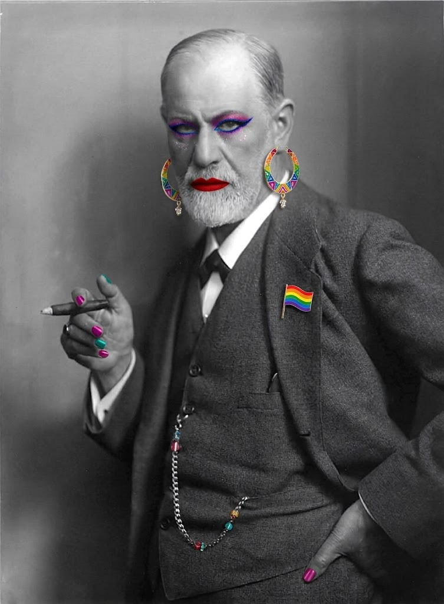

Freud, en el orden
del programa
Un recorrido por la bibliografía básica de Clínica I que respeta la secuencia de la cátedra —tema por tema, tópico por tópico— aunque eso implique ir y volver en el tiempo, como la propia obra de Freud. Cada texto se lee con su fecha: qué observó, contra qué escribía y qué todavía no podía decir.
Material didáctico del curso Clínica I: Fundamentos psicoanalíticos · Facultad de Psicología · Universidad de la República (UDELAR) · Montevideo, Uruguay · 2026.
Aviso. Este no es material oficial del curso: no fue revisado por les docentes de Clínica I, por lo que puede contener errores. No reemplaza las lecturas; es un material de apoyo para acompañarlas. Se aceptan sugerencias de corrección, estructura y contenido en este formulario anónimo.

Cómo está armado
Cada texto del programa tiene el mismo recorrido: dónde estamos en la obra (fecha, contexto, polémica), el problema que el texto viene a resolver, el desarrollo en pasos —acompañado de un diagrama que se va construyendo con el scroll—, las observaciones clínicas de donde Freud sacó sus tesis, sus palabras, las trampas de examen y una pregunta con respuesta modelo para que te pongas a prueba.
Arriba, la barra de tiempo muestra el año del texto que estás leyendo. Mirala cuando cambiás de bloque: el punto se mueve hacia atrás y hacia adelante. Eso no es un error del programa; es su lógica.
El mapa: temas, tópicos, textos
Este es el orden real del curso y el orden de este material. Las filas verdes entran en el Parcial 1; las rojas, en el Parcial 2. Cada fila es un enlace.
| Tema | Tópico | Bibliografía básica | Año |
|---|---|---|---|
| 1 · La especificidad del psicoanálisis. Contexto de surgimiento. Singularidad del método | ¿Qué es el psicoanálisis? · Historia · Método · Histeria | Estudios sobre la histeria, cap. 4 Carta 69 a Fliess | 1895 1897 |
| Transferencia · Asociación libre · Atención parejamente flotante · Ética · Repetición | Sobre la dinámica de la transferencia Consejos al médico… Puntualizaciones sobre el amor de transferencia Recordar, repetir y reelaborar | 1912 1912 1915 [1914] 1914 | |
| 2 · Sexualidad, cuerpo erógeno y avatares de las pulsiones | Sexualidad en general, infantil · Cuerpo erógeno | Mis tesis sobre el papel de la sexualidad… Tres ensayos de teoría sexual, II y III | 1906 1905 |
| Primera teoría pulsional | Pulsiones y destinos de pulsión | 1915 | |
| — fin del Parcial 1 · comienza el Parcial 2 — | |||
| 3 · Del síntoma al método. El lenguaje del síntoma. Formaciones del Inconsciente | Síntoma | Conferencias de introducción 17, 18, 19 y 23 | 1916-17 |
| Formaciones de compromiso | La interpretación de los sueños, cap. VI, A, B y C Psicopatología de la vida cotidiana, I y II | 1900 1901 | |
| 4 · Inconsciente y subjetividad. Clínica y metapsicología | Primera tópica | La interpretación de los sueños, cap. VI, D e I, y cap. VII | 1900 |
| Represión, primera teoría de la angustia | La represión Conferencia 25 | 1915 1916-17 | |
| Inconsciente | Lo inconciente | 1915 | |
| Narcisismo | Introducción del narcisismo · Conferencia 26 | 1914 1916-17 | |
| Segunda teoría pulsional | Más allá del principio de placer, II, III, VI y VII | 1920 | |
| Segunda tópica | El yo y el ello | 1923 | |
| Edipo. Identificaciones | Psicología de las masas…, cap. VII El sepultamiento del complejo de Edipo | 1921 1924 | |
| Segunda teoría de la angustia | Inhibición, síntoma y angustia, II, III, IV y VIII · Nuevas conferencias 31 y 32 | 1926 1933 | |
| 5 · El malestar en la cultura. Actualidad y vigencia del psicoanálisis | Relación entre pulsión y cultura | El malestar en la cultura | 1930 [1929] |
Convención Amorrortu: en «1915 [1914]» el corchete es el año de redacción y el número exterior el de publicación.
Un programa que va y viene
Si se ubica cada texto según su lugar en el programa (eje horizontal) y su año (eje vertical), la línea no sube en diagonal: zigzaguea. El curso no sigue la biografía de Freud sino una lógica de problemas: primero el método, después la sexualidad, luego el síntoma, después el aparato y al final la cultura.
Parcial 1
El curso empieza en 1895 con la histeria y salta enseguida a los escritos técnicos de 1912-1915. El método se presenta de entrada en su forma madura.
El primer retroceso
Después de Recordar, repetir y reelaborar (1914), el Tema 2 vuelve a 1906 y 1905. Lo que el método escucha —la sexualidad— se estudia después del método, aunque Freud lo escribió antes. Hay que leer los Tres ensayos sin el vocabulario de 1912 ni el de 1923.
Parcial 2: el salto más largo
Se arranca por el síntoma en las Conferencias de 1916-17 y se vuelve 17 años atrás, a La interpretación de los sueños (1900). El síntoma se entiende mejor con el sueño al lado: los dos son productos de las mismas leyes.
La metapsicología, en zigzag
1915 → 1917 → 1915 → 1914: represión, angustia, inconsciente y narcisismo se escribieron casi juntos y se corrigen entre sí. En este tramo la cronología importa menos que el sistema.
El último tramo sube
De 1920 a 1930 el programa casi respeta la cronología (sólo Psicología de las masas, 1921, queda después de El yo y el ello, 1923). Es la etapa de los grandes virajes.
Los cuatro virajes
Las bandas marcan los momentos en que Freud rehace su teoría: 1895-97 (del trauma real a la realidad psíquica), 1914-17 (metapsicología), 1920-24 (pulsión de muerte, segunda tópica), 1926 (se invierte la teoría de la angustia). Antes de usar un concepto, preguntate de qué lado de cada banda está el texto.
Cuatro tesis que atraviesan el programa
1. El inconsciente no es «lo que no sé de mí». No es un depósito de recuerdos pálidos: está separado de la conciencia por una fuerza que trabaja todo el tiempo, la represión. Un contenido es inconsciente no porque esté lejos, sino porque algo lo mantiene afuera. (Esta equivalencia inconsciente = reprimido vale hasta 1923; El yo y el ello la rompe.)
2. El síntoma tiene sentido, y ese sentido es una satisfacción. No es un déficit: es un compromiso entre algo que pide satisfacción y algo que la prohíbe. Por eso se lo puede interpretar, y por eso no alcanza con interpretarlo.
3. Sexual no es genital. Cuando Freud dice «sexual» no dice adulto ni reproductivo: dice un placer que se apoya en una función del cuerpo, se separa de ella y se vuelve autónomo.
4. La técnica se deriva de la hipótesis del inconsciente. Asociación libre, atención parejamente flotante, abstinencia y manejo de la transferencia son la forma que toma esa hipótesis cuando se la pone a trabajar con otro. (La fórmula «el método es la teoría» es una síntesis pedagógica, no una cita de Freud.)
Abrir el léxico Amorrortu, con el año en que aparece cada término ▾
Etcheverry traduce Trieb por pulsión (nunca «instinto»), Besetzung por investidura (nunca «catexia» ni «carga»), Untergang por sepultamiento (nunca «disolución»). Amorrortu imprime trasferencia e inconciente; acá se escribe transferencia e inconsciente, salvo en citas y en el título Lo inconciente.
El método y la sexualidad
¿Qué clase de saber es el psicoanálisis, cómo trabaja, y qué es lo que escucha? Del abandono de la hipnosis a la pulsión como concepto fronterizo.
Desde «¿Qué es el psicoanálisis?» hasta «Primera teoría pulsional»La especificidad del psicoanálisis. Contexto de surgimiento. Singularidad del método psicoanalítico
¿Qué hace que el psicoanálisis sea psicoanálisis y no una psicoterapia más?
El arco tiene tres tiempos. 1893-1895: Freud trabaja con histéricas, abandona la hipnosis, inventa la técnica de la presión y en ese tropiezo encuentra la resistencia. 1897: la Carta 69 desarma la teoría de la seducción; lo que queda en pie es la realidad psíquica. 1912-1915: los escritos técnicos muestran que transferencia, asociación libre, atención parejamente flotante, abstinencia y repetición son un solo dispositivo con una sola ética.
Estudios sobre la histeria, cap. 4: «Sobre la psicoterapia de la histeria»
Dónde estamos
Viena, 1895. Freud firma con Josef Breuer un libro cuyo capítulo final ya no comparte del todo. El método catártico de Breuer —que el enfermo, bajo hipnosis, reviva la escena patógena y descargue el afecto «estrangulado»— funciona de manera irregular y sólo con quienes se dejan hipnotizar. El capítulo 4, escrito por Freud solo, registra ese límite y en el mismo movimiento inventa otra cosa.
El problema
¿Qué se hace cuando el instrumento falla?
Si la hipnosis era necesaria para llegar al recuerdo patógeno, ¿cómo se llega sin ella? Y sobre todo: ¿qué significa que el enfermo se oponga a que se llegue? Freud podía leer esa oposición como mala voluntad o como torpeza propia. Leerla como un hecho psíquico con estructura es lo que convierte un fracaso terapéutico en el descubrimiento fundante.
1 · El modelo de Breuer
Hipnosis profunda → se amplía la memoria → aparece la escena en que nació el síntoma → el afecto retenido se descarga (abreacción) → el síntoma cede. El trabajo es de acceso: el recuerdo está, sólo hay que llegar.
2 · «Yo no era hipnotizador»
Muchos pacientes no entran en sonambulismo. Freud ensaya la técnica de la presión: apoya la mano en la frente y asegura que, al cesar la presión, surgirá una ocurrencia que hay que comunicar, sea la que fuere. Todavía es coerción sugestiva, pero ya trabaja con material de la vigilia. Es el antecedente inmediato de la asociación libre.
3 · Algo se opone
Al insistir aparece lo no previsto: el paciente calla, dice que no se le ocurre nada, descarta lo que surge por trivial o inconveniente. Una fuerza se interpone entre la ocurrencia y el material patógeno. Freud la llama resistencia.
4 · El paso decisivo
Esa fuerza que hoy se le opone en la cura es la misma que, al contraer la enfermedad, esforzó fuera de la conciencia la representación insoportable: la defensa. No hay dos fuerzas: hay una sola vista en dos tiempos. Lo que estorba al tratamiento es el objeto mismo del tratamiento.
5 · Consecuencia
La técnica deja de ser un repertorio de artificios para extraer recuerdos y pasa a ser un modo de operar sobre una dinámica de fuerzas. La resistencia ya no es «el paciente que no colabora»: es la defensa en ejercicio, y la prueba de que el trabajo va en la dirección correcta.
Cómo está ordenado lo que hay que levantar
Primer ordenamiento · lineal
Los recuerdos de un mismo tema se apilan cronológicamente, «como los legajos de un archivo», y se recorren del más reciente al más antiguo.
Segundo ordenamiento · concéntrico
Capas estratificadas alrededor de un núcleo patógeno. La resistencia crece cuanto más cerca del núcleo: la dificultad misma sirve para medir el avance. Es una ley dinámica, no un detalle.
Tercer ordenamiento · lógico
El más importante y el menos dibujable: los enlaces de contenido avanzan en zigzag, «como el salto del caballo en el tablero». Un mismo elemento pertenece a varias series a la vez: es la sobredeterminación antes de tener nombre.
Y el médico entra en la serie
Cuando la relación con el médico se perturba, Freud encuentra un caso particular: la enferma trasfiere sobre la persona del médico representaciones penosas que surgen del análisis, «por una falsa conexión» (mésalliance). Es la primera aparición de la transferencia… y aparece como estorbo.
Yo no era hipnotizador, y debí renunciar al sonambulismo y a la ampliación de la memoria en él lograda.
Estudios sobre la histeria, cap. 4 ≈Una confesión de incompetencia técnica que funciona como acta de nacimiento del método. Freud narra sus hallazgos como derrotas.
La enferma había trasferido sobre la persona del médico las representaciones penosas que brotaban del contenido del análisis, por vía de una falsa conexión.
Estudios sobre la histeria, cap. 4 ⚑
Mucho se habrá ganado si conseguimos trasformar su miseria histérica en un infortunio ordinario.
Estudios sobre la histeria, cap. 4, final ⚑Respuesta a quien objeta que contra el destino nada puede la terapia. Freud acepta el límite y lo vuelve definición ética: no promete dicha.
Trampas de examen
- «Los historiales se leen como novelas breves» es del cap. 2 (Elisabeth von R.), no del cap. 4. «Los histéricos padecen de reminiscencias» es de la Comunicación preliminar (1893).
- El método catártico no se abandona por razones teóricas sino porque no se aplica a todos; la teoría se rectifica después.
- La resistencia no es falta de colaboración ni un rasgo de carácter: es la defensa operando en presente.
- La transferencia de 1895 (falso enlace, obstáculo) no es la de 1912 (motor y resistencia).
Fundamente por qué el descubrimiento de la resistencia constituye el pasaje del método catártico al método psicoanalítico.
Carta 69 a Fliess: «Ya no creo más en mi neurótica»
Dónde estamos
Dos años después de los Estudios. Desde 1896 Freud sostiene la neurotica: toda neurosis nace de una seducción sexual real, sufrida pasivamente en la infancia y resignificada en la pubertad. Es una teoría fuerte, con pretensión médica. Y se le cae, en plena marcha de su autoanálisis y a un año de la muerte de su padre (1896). La carta es privada: se publicó póstumamente.
El problema
Si los relatos de seducción no corresponden a hechos, ¿qué queda del psicoanálisis?
Sin trauma real no hay causa, y sin causa la disciplina queda en una hermenéutica sin objeto. Freud decide si abandona el campo o si el objeto era otro desde el principio. Elige lo segundo.
La neurotica en dos tiempos
Escena 1 (infancia): seducción efectiva, sin sentido sexual para el niño. Escena 2 (pubertad): otra vivencia la evoca y le da sentido; recién ahí el recuerdo produce efecto patógeno, a posteriori. Modelo traumático y realista: en todos los casos habría un hecho.
Motivo 1 · clínico
El continuo fracaso en llevar un análisis hasta su conclusión real. No lo refuta un argumento: lo refuta la práctica.
Motivo 2 · lógico-estadístico
En todos los casos habría que inculpar al padre como perverso —«sin excluir al mío propio»—, y siendo la histeria tan frecuente, no es verosímil una difusión tan grande de la perversión contra niños.
Motivo 3 · el decisivo
«En lo inconciente no existe un signo de realidad»: no se puede distinguir la verdad de la ficción investida de afecto. Esto no dice que las seducciones no existan; dice que el inconsciente carece del criterio para discriminarlas. Allí sólo cuenta la investidura.
Motivo 4 · la psicosis
Ni en la psicosis más profunda, donde las defensas están arrasadas, aflora el recuerdo inconsciente como tal. Lo inconsciente no se entrega nunca de forma directa.
Lo que queda en pie
Freud no abandona la etiología sexual: abandona el carácter fáctico del trauma. La escena no necesita haber ocurrido para ser causa. El objeto se desplaza del acontecimiento a la realidad psíquica: «sólo lo psicológico ha quedado intacto».
Y ahora quiero confiarte enseguida el gran secreto que a lo largo de estos últimos meses ha despuntado lentamente. Ya no creo más en mi neurótica.
Carta 69, apertura ⚑El derrumbe de una teoría dicho en el registro de la confidencia. La escena real de la fundación es una carta a un amigo.
Tercero, la certidumbre de que en lo inconciente no existe un signo de realidad, de suerte que no es posible distinguir entre la verdad y la ficción investida de afecto.
Carta 69, tercer motivo ⚑
Si yo estuviera deprimido, confuso, agotado, tales dudas deberían apreciarse como signos de debilidad. Pero como me encuentro en el estado opuesto, debo reconocerlas como el resultado de un honesto y vigoroso trabajo intelectual.
Carta 69 ≈Freud se falsa a sí mismo y lo convierte en credencial: desmonta su tesis y confiesa que todavía no tiene la que la reemplaza.
En este derrumbe de todo lo valioso, sólo lo psicológico ha quedado intacto.
Carta 69, cierre ⚑
Trampas de examen
- «En 1897 Freud abandona la sexualidad»: es exactamente lo contrario. Abandona el estatuto fáctico del trauma.
- «No hay signo de realidad en lo inconsciente» no niega los abusos reales; dice que lo inconsciente no tiene criterio para distinguirlos de la fantasía investida.
- Edipo: Carta 71, no 69.
Analice: «en lo inconciente no existe un signo de realidad…». Sitúela en la Carta 69 y explique qué consecuencias tiene para el objeto del psicoanálisis.
Lo que nació entre 1895 y 1897
Un método nace de un fracaso
La hipnosis no alcanza; la presión hace aparecer la resistencia, y la resistencia es la defensa vista en presente.
Un material con arquitectura
Lineal, concéntrico, lógico. La resistencia aumenta con la cercanía al núcleo.
Un objeto propio
Cae la seducción como causa universal; queda la fantasía con eficacia causal: realidad psíquica.
Sobre la dinámica de la transferencia
Dónde estamos
Quince años después de la Carta 69. El psicoanálisis se institucionaliza y nace la serie de artículos técnicos de 1912-1915. Freud vuelve sobre lo que en 1895 había tratado como estorbo, ahora sabiendo que es el eje de la cura. Discute también con Jung, de quien toma —con reservas— el término introversión y la noción de imago.
El problema
¿Cómo puede la transferencia ser a la vez el vehículo del éxito y el arma más fuerte de la resistencia?
Si es lo que liga al paciente con el tratamiento, ¿por qué aparece justo donde el trabajo se detiene? Toda respuesta que elija uno de los dos términos y descarte el otro es una mala lectura.
1 · El clisé
Freud no empieza por la cura sino por la vida amorosa de cualquiera. Por efecto conjugado de las disposiciones innatas y los influjos de la infancia, cada quien adquiere una manera de amar: condiciones de amor, pulsiones que satisface, metas. Eso da un clisé —metáfora de imprenta: la matriz con que se reimprime siempre el mismo texto.
2 · Se reimprime
El clisé se reimprime de manera regular a lo largo de la vida. Consecuencia capital: la transferencia no es un fenómeno del consultorio sino un hecho de la vida amorosa que el análisis revela, no crea.
3 · Por qué recae sobre el médico
La libido del neurótico está introvertida (retirada de los objetos reales, vuelta sobre fantasías) e insatisfecha. Quien tiene la necesidad de amor insatisfecha se vuelca con representaciones-expectativa sobre toda persona nueva. El médico es una persona nueva: nada más.
4 · Tres transferencias
Positiva tierna, susceptible de conciencia: sostiene el trabajo. Positiva erótica de mociones reprimidas y negativa (hostil): esas dos sirven a la resistencia. La paradoja se disuelve por esta distinción.
5 · Dónde se intensifica
La transferencia se enciende justamente cuando el análisis se acerca a lo reprimido. Su irrupción no indica fracaso: señala el punto sensible. Los impulsos inconscientes «no quieren ser recordados»: aspiran a reproducirse, conforme a la atemporalidad de lo inconsciente.
6 · El campo de batalla
La lucha entre médico y paciente, intelecto y vida pulsional, conocer y querer-hacer, se libra sobre la transferencia. Y la frase final: «a nadie se le puede dar muerte in absentia o in effigie». Sin conflicto actualizado en presencia, no hay sobre qué operar.
Cada ser humano, por efecto conjugado de sus disposiciones innatas y de los influjos que recibe en su infancia, adquiere una especificidad determinada para el ejercicio de su vida amorosa […]. Esto da por resultado un clisé (o también varios) que se repite —es reimpreso— de manera regular en el curso de la vida.
Sobre la dinámica de la transferencia ⚑
Los impulsos inconcientes no quieren ser recordados como la cura lo desea, sino que aspiran a reproducirse conforme a la atemporalidad y a la capacidad de alucinación de lo inconciente.
Sobre la dinámica de la transferencia ⚑
Y es innegable que su sometimiento constituye la mayor dificultad; pero a nadie se le puede dar muerte in absentia o in effigie.
Sobre la dinámica de la transferencia, frase final ⚑
Trampas de examen
- La transferencia no la crea el analista ni depende de su encanto: preexiste como clisé.
- No toda transferencia es resistencia: sólo la negativa y la positiva erótica reprimida.
- «Motor» y «obstáculo» no son dos momentos: son dos funciones del mismo fenómeno.
Relacione el clisé con la tesis de que la transferencia es a la vez el arma más poderosa de la resistencia y el vehículo del éxito terapéutico.
Consejos al médico sobre el tratamiento psicoanalítico
Dónde estamos
Mismo año que la Dinámica, y su reverso: aquel texto describe lo que le pasa al paciente; éste, lo que tiene que hacer el analista. Freud escribe para practicantes que ya existen y le piden reglas. No entrega etiqueta profesional: entrega la deducción técnica de la hipótesis del inconsciente.
El problema
¿Cómo se escucha un discurso cuya ley de composición se desconoce?
Toda escucha orientada por una expectativa selecciona, y al seleccionar encuentra sólo lo que ya sabía. ¿Qué disposición del analista es compatible con la existencia del inconsciente? ¿Y qué le está prohibido hacer con el poder que la transferencia le entrega?
1 · Dos reglas simétricas
Del lado del paciente, la regla fundamental: comunicar todo lo que se le ocurra, sin seleccionar por crítica lógica o afectiva (esto es la asociación libre). Del lado del analista, su correlato: la atención parejamente flotante. Si uno debe decirlo todo, el otro debe escucharlo todo sin jerarquizar.
2 · Por qué no seleccionar
Apenas el analista tensa adrede la atención empieza a escoger: destaca un fragmento, descarta otro, siguiendo sus expectativas o inclinaciones. Así sólo confirmaría lo que ya sabía. Por lo mismo, no se toman notas en sesión: obligaría a decidir en el momento qué importa. Freud confía en la memoria inconsciente del médico.
3 · El receptor telefónico
El médico debe volver hacia el inconsciente emisor del enfermo su propio inconsciente como órgano receptor, «como el receptor telefónico respecto del micrófono». La escucha no es comprensión consciente: es transducción.
4 · La mancha ciega
Si el instrumento es el propio aparato psíquico, sus represiones no superadas son límites del instrumento: cada una corresponde, dice Freud citando a Stekel, a una mancha ciega. De ahí la exigencia de que el analista se analice. Es un requisito técnico, no moral.
5 · Cirujano y espejo
El cirujano: deja de lado afectos y aun compasión para operar según las reglas del arte (no insensibilidad: que el afecto no gobierne). El espejo: el médico no debe ser transparente sino mostrar sólo lo que le es mostrado. Espejo quiere decir opacidad, no frialdad.
6 · La prohibición ética
Guardarse de la ambición terapéutica y de la ambición pedagógica: no usar el influjo de la transferencia para educar al paciente a imagen del analista. Hacerlo sería abandonar el psicoanálisis y hacer sugestión.
La técnica consiste simplemente en no querer fijarse en nada en particular y en prestar a todo cuanto uno escucha la misma atención parejamente flotante.
Consejos al médico ⚑El «simplemente»: Freud enuncia como trivial la regla más difícil de sostener.
El médico debe orientar hacia el inconciente emisor del enfermo su propio inconciente como órgano receptor, ser para el analizado como el receptor telefónico respecto del micrófono.
Consejos al médico ⚑
El médico no debe ser trasparente para el analizado, sino, como la luna de un espejo, no mostrar sino lo que le es mostrado.
Consejos al médico ⚑
Trampas de examen
- Atención parejamente flotante no es distracción: es suspensión deliberada de la selección.
- El espejo manda ser opaco, no frío ni mudo.
- La abstinencia de este texto (no usar el poder transferencial) no es la regla de abstinencia de 1915 (no satisfacer la demanda del paciente).
¿Cómo se articulan la asociación libre y la atención parejamente flotante, y por qué son consecuencias de la hipótesis del inconsciente?
Puntualizaciones sobre el amor de transferencia
Dónde estamos
El último de los escritos técnicos y el más delicado. Freud ya estableció que la transferencia es motor y resistencia; ahora enfrenta su forma más peligrosa para la institución naciente: la paciente que se enamora del analista. Ahí se juega el escándalo público del psicoanálisis, y buena parte del texto discute con sus detractores. Como antecedente, el episodio de Breuer con Anna O., que Freud conocía bien.
El problema
Una paciente declara estar enamorada de su analista. ¿Qué es eso?
Tratarlo como accidente lo desestima; como sentimiento dirigido a la persona del médico, abandona el análisis; como mero artificio, miente. Freud tiene que sostener a la vez que el amor de transferencia es genuino, que es repetición y que es resistencia.
1 · Cuándo aparece
No irrumpe al azar: sobreviene cuando el análisis se aproxima a un fragmento particularmente penoso y reprimido de la biografía. Por eso funciona como resistencia y, a la vez, como señal de dónde estaba por tocarse algo.
2 · Ceder
Descartado, y el argumento no es moralista: sería un gran triunfo para la paciente y una derrota total para la cura, porque habría conseguido actuar en la vida lo que sólo debía recordar. El escándalo ético es, antes que nada, un error técnico.
3 · Rechazar moralizando
También descartado: exigir sofocar la pulsión o invocar la moral trata el amor como desliz de conducta y lo desaprovecha como material. Freud lo compara con conjurar un espíritu del inframundo para despacharlo de vuelta sin haberle preguntado nada: se hace aflorar lo reprimido sólo para volver a reprimirlo. ≈
4 · Sostenerlo como material
Única vía: ni ceder ni rechazar. Mantener el enamoramiento dentro del análisis para que revele de qué reedición infantil se trata. La regla que organiza esta vía es la abstinencia.
5 · La abstinencia es económica
No es castidad ni prescripción moral: la necesidad y la añoranza no deben calmarse, deben subsistir como fuerzas que empujen al trabajo y a la alteración. Satisfacer la demanda —con amor, consuelo, consejos— cancela el motor de la cura.
6 · Genuino, repetición, resistencia
«No es lícito» discutirle a este enamoramiento el carácter de amor genuino: todo enamoramiento repite modelos infantiles; éste lo hace de modo más visible. El analista no niega la verdad del amor: no responde en el registro en que se le habla.
Si su cortejo de amor fuese correspondido, ello significaría un gran triunfo para la paciente, pero una derrota total para la cura: ella habría alcanzado aquello a que todos los enfermos aspiran en el análisis, actuar, repetir en la vida algo que sólo deben recordar, reproducir como material psíquico y conservar dentro del ámbito de lo psíquico.
Puntualizaciones… ⚑
No se le debe calmar al paciente la necesidad y la añoranza; es preciso dejarlas subsistir en él como unas fuerzas que lo esfuercen al trabajo y a la alteración, y guardarse de apaciguarlas mediante subrogados.
Puntualizaciones… ≈El tratamiento debe llevarse a cabo, en lo posible, en estado de privación, de abstinencia. La insatisfacción no es crueldad: es el motor.
El psicoanalista sabe que trabaja con las fuerzas más explosivas y que necesita de la misma prudencia y escrupulosidad que el químico. Pero ¿se le ha prohibido alguna vez al químico, a causa de su peligrosidad, ocuparse de las sustancias explosivas, indispensables por su eficacia?
Puntualizaciones… ≈
Trampas de examen
- La abstinencia no es privación moral ni regla sobre la vida sexual del paciente: es un principio económico.
- Decir sólo «es resistencia» reproduce la salida cómoda que Freud rechaza: es genuino, repetición y resistencia.
- Rechazar moralizando no es la solución: es una de las dos salidas descartadas.
Fundamente por qué la regla de abstinencia no es una norma moral, articulando con el carácter genuino y resistencial del amor de transferencia.
Recordar, repetir y reelaborar
Dónde estamos
Escrito entre Sobre la iniciación del tratamiento (1913) y las Puntualizaciones. Veinte años después de los Estudios, Freud hace el balance de su técnica y dice qué distingue al psicoanálisis de cualquier otra influencia sobre un semejante. El arco del Tema 1 se cierra acá.
El problema
El paciente no recuerda: repite. ¿Qué se hace con eso?
Si el material no viene como recuerdo sino como acción, desplegado en la conducta y en el vínculo con el analista sin que el paciente sepa que lo produce, ¿por qué no alcanza con decírselo?
1 · Tres tiempos de la técnica
Catarsis hipnótica (Breuer): reproducir la situación patógena. Presión y ocurrencias: colegir lo reprimido y vencer la resistencia. Técnica actual: el analista renuncia a enfocar un tema, estudia la superficie psíquica y usa la interpretación para hacer conscientes las resistencias. Cambia el foco, no la meta: llenar las lagunas del recuerdo, vencer las resistencias de represión.
2 · No recuerda: actúa
El analizado no recuerda nada de lo olvidado y reprimido, sino que lo actúa (agieren): no como recuerdo sino como acción, y lo repite sin saber que lo hace. Ejemplo de Freud: no recuerda haber sido desafiante con la autoridad de los padres, pero se comporta así con el médico.
3 · Una ley cuantitativa
Cuanto mayor la resistencia, tanto más será sustituido el recordar por el actuar (repetir). La actuación es un índice de resistencia, no un mal comportamiento.
4 · La transferencia es una pieza de repetición
La repetición es la transferencia del pasado olvidado, no sólo sobre el médico sino sobre todos los ámbitos de la vida actual. La enfermedad no es un episodio histórico sino un poder actual.
5 · La neurosis de transferencia
Se da a todos los síntomas un nuevo significado transferencial: la neurosis ordinaria es sustituida por una neurosis de transferencia, un «reino intermedio entre la enfermedad y la vida», enfermedad artificial accesible a la intervención y de naturaleza provisional.
6 · Reelaborar
Nombrar la resistencia no la hace cesar. Hay que dar tiempo al analizado para enfrascarse en ella, reelaborarla (durcharbeiten) y vencerla, prosiguiendo el trabajo en su desafío. Esa reelaboración es la pieza que más altera al paciente y la que distingue al análisis de todo influjo por sugestión.
El analizado no recuerda, en general, nada de lo olvidado y reprimido, sino que lo actúa. No lo reproduce como recuerdo, sino como acción; lo repite, sin saber, desde luego, que lo hace.
Recordar, repetir y reelaborar ⚑
Le abrimos la trasferencia como la palestra donde tiene permitido desplegarse con una libertad casi total […]. Con tal que el paciente nos muestre al menos la solicitud de respetar las condiciones de existencia del tratamiento, conseguimos, casi siempre, dar a todos los síntomas de la enfermedad un nuevo significado trasferencial, sustituir su neurosis ordinaria por una neurosis de trasferencia.
Recordar, repetir y reelaborar, p. 156 ⚑
Esta reelaboración de las resistencias puede convertirse en la práctica en una ardua tarea para el analizado y en una prueba de paciencia para el médico. No obstante, es la pieza del trabajo que produce el máximo efecto alterador sobre el paciente, y que distingue al tratamiento analítico de todo influjo por sugestión.
Recordar, repetir y reelaborar, cierre ⚑
Trampas de examen
- Repetir no es lo contrario simple de recordar: es la forma en que lo reprimido se presenta cuando la resistencia impide recordarlo.
- La neurosis de transferencia no es un efecto indeseado: es lo buscado.
- Reelaborar no es «repasar» la interpretación: es el trabajo sobre la resistencia a lo largo del tiempo.
Fundamente por qué la reelaboración distingue al tratamiento psicoanalítico de la sugestión. Articule con recordar/repetir y con la neurosis de transferencia.
Un solo dispositivo, visto en cuatro textos
Leelo como un hilo, no como una lista. Cada concepto cambia de estatuto según el año.
La ética, en una frase
Renunciar a usar el poder que la transferencia da: ni ambición terapéutica, ni pedagógica, ni satisfacción de la demanda.
El criterio de especificidad
La reelaboración de las resistencias: lo que separa al psicoanálisis de la sugestión.
Simetría del método
Regla fundamental ↔ atención parejamente flotante: dos suspensiones de la selección consciente.
Sexualidad, cuerpo erógeno y avatares de las pulsiones
¿Por qué la sexualidad, y no otra cosa, está en la raíz del conflicto psíquico?
El Tema 1 estableció cómo se escucha. El Tema 2 responde qué se escucha: sexualidad. Sólo que la palabra no significa lo que en la conversación corriente. Freud la descentra en tres movimientos: de la genitalidad (hay satisfacción sexual sin genitales, y desde los primeros meses), de la reproducción (la meta es la satisfacción, no la especie) y de la pubertad (que no inaugura la vida sexual, la reorganiza). Lo que sostiene el adjetivo es el cuerpo, pero no el de la anatomía: el cuerpo erógeno.
Mis tesis sobre el papel de la sexualidad en la etiología de las neurosis
Dónde estamos
Un año después de los Tres ensayos y del caso Dora; nueve años después de la Carta 69. Leopold Löwenfeld le pide una exposición de sus puntos de vista para un libro, y Freud hace algo infrecuente: escribe en público la historia de su propio error. La rectificación privada de 1897 se vuelve doctrina fechada.
El problema
Si la escena de seducción no ocurrió, ¿queda en pie la etiología sexual?
Freud responde que sale reforzada, a condición de rehacer dos nociones: la de causa y la de sexualidad.
1 · Historia de un error
Freud periodiza su recorrido: lo que sostenía en 1896 no es lo de 1906. Sobrestimó la frecuencia de las seducciones —«por lo demás no dudosas»— y no supo distinguir entre los espejismos de la memoria y las huellas de hechos reales.
2 · Un hecho nuevo
Si los histéricos refieren sus síntomas a traumas inventados, «este hecho nuevo» significa que crean esas escenas en la fantasía, y la realidad psíquica merece apreciarse junto a la práctica. Lo que refutaba la teoría se vuelve dato.
3 · Constitución y accidente
Para no recaer en la disyuntiva innato / adquirido, Freud propone que la constitución sexual y el vivenciar infantil accidental se compensan: cuanto más pesa uno, menos se requiere del otro. Es el germen de las series complementarias.
4 · El síntoma es práctica sexual
«Los síntomas constituyen la práctica sexual de los enfermos». No dice que aludan a lo sexual: dice que son una satisfacción sexual, deformada, sustitutiva, costosa e irreconocible.
5 · El negativo de la perversión
Neurosis y perversión parten del mismo material: la disposición sexual infantil, parcial y polimorfa. En la perversión la moción se ejerce a cielo abierto; en la neurosis sucumbe a la represión y retorna en el síntoma. Diferencia de mecanismo, no de contenido.
Si los histéricos remiten sus síntomas a unos traumas inventados, este hecho nuevo significa que ellos crean tales escenas en la fantasía, y por tanto la realidad psíquica merece ser apreciada junto a la realidad práctica.
Mis tesis… ⚑
Los síntomas constituyen la práctica sexual de los enfermos.
Mis tesis… ⚑Freud escribe en modo aforístico cuando quiere que algo quede clavado.
Las neurosis son, por así decir, el negativo de las perversiones.
Tres ensayos, ensayo I; retomada en Mis tesis… ⚑
Trampas de examen
- El abandono de la seducción no es de 1906: es de 1897. 1906 es su publicación y elaboración doctrinal.
- «Las pacientes mentían»: fantasía no es mentira y realidad psíquica no es irrealidad.
- «Negativo de la perversión» no es «el neurótico es un perverso reprimido»: mismo material, distinto destino.
Fundamente por qué el abandono de la teoría de la seducción no implica abandonar la etiología sexual. Sitúe realidad psíquica y serie complementaria.
Tres ensayos de teoría sexual, ensayos II y III
Dónde estamos
1905, el año de Dora y del libro sobre el chiste. Los Tres ensayos son la otra cara de La interpretación de los sueños: si el sueño mostró que hay un deseo inconsciente, este libro dice de qué está hecho. El ensayo I desató, por vía de las perversiones, el lazo «natural» entre pulsión y objeto; el II y el III hacen el trabajo positivo. Ojo: Freud lo amplió hasta 1924, y en la misma página conviven estratos de distintas fechas.
El problema
¿Hay sexualidad antes de la pubertad? ¿De qué está hecha?
Si faltan los tres criterios que definían lo sexual —genital maduro, objeto del otro sexo, fin reproductivo—, ¿qué hace que una satisfacción sea sexual? Y si la sexualidad no empieza en la pubertad, ¿qué hace la pubertad?
1 · La amnesia infantil
Objeción obvia: nadie recuerda sus primeros años. Freud la da vuelta: el niño de 3 a 5 años percibe, entiende y juzga; si el adulto no conserva casi nada, ese borramiento es del mismo orden que la amnesia histérica: producto de la represión. La objeción se vuelve el primer indicio.
2 · Primero: la necesidad
El lactante en el pecho. La satisfacción del hambre (función de autoconservación) se acompaña de un placer en la zona de los labios.
3 · Después: el desvío
El niño repite ese placer sin alimento: chupetea. La actividad se separó de la función que la sostenía. Eso es el apuntalamiento: la pulsión sexual se recuesta sobre una función vital y sólo más tarde se independiza. Comer es necesidad; chupetear, no.
4 · Autoerotismo
Como el pecho se pierde, el placer se busca en el cuerpo propio: el quehacer se vuelve autoerótico. No hay todavía objeto unificado ni unidad que se tome como objeto.
5 · La zona erógena
Un sector de piel o mucosa donde ciertas estimulaciones producen placer… y «cualquier otro sector» puede prestar el mismo servicio. Ese «cualquiera» es toda la teoría: la erogeneidad no la reparte la anatomía, la escribe la historia de los cuidados. El cuerpo del psicoanálisis es un cuerpo erógeno.
6 · Perverso polimorfo
La sexualidad infantil no está unificada: es una anarquía de pulsiones parciales, cada una con su fuente y su meta (ver, mostrar, apoderarse…). «Perverso» es técnico, no moral: medida contra una norma genital que todavía no rige. La seducción no crea la disposición: la revela.
7 · Latencia y diques
Entre los 5 años y la pubertad, la actividad sexual manifiesta decae (total o parcialmente). Se edifican los diques: asco, vergüenza, reclamos ideales estéticos y morales; por formación reactiva y sublimación. La moral se construye con la sexualidad misma vuelta contra sí.
8 · Ensayo III: la pubertad reorganiza
Las pulsiones parciales quedan bajo el primado de la zona genital. Pasan a dar placer previo, antesala del placer final de la descarga. Si el placer previo se vuelve fin en sí, el camino se detiene: perversión. La normalidad es un resultado inestable. Y el hallazgo de objeto es «propiamente un reencuentro».
Al comienzo, la satisfacción de la zona erógena se asoció, sin duda, con la satisfacción de la necesidad de alimentarse. El quehacer sexual se apuntala primero en una de las funciones que sirven a la conservación de la vida, y sólo más tarde se independiza de ella.
Tres ensayos, II, «El chupeteo» ⚑
Bajo el influjo de la seducción, el niño puede convertirse en un perverso polimorfo, ser descarriado a todas las trasgresiones posibles. Ello muestra que en su disposición trae la aptitud para hacerlo.
Tres ensayos, II ⚑
Durante este período de latencia total o meramente parcial se edifican los poderes anímicos que más tarde se presentarán como inhibiciones en el camino de la pulsión sexual y angostarán su curso a la manera de unos diques: el asco, el sentimiento de vergüenza, los reclamos ideales en lo estético y en lo moral.
Tres ensayos, II ⚑
El hallazgo de objeto es propiamente un reencuentro.
Tres ensayos, III, «El hallazgo de objeto» ⚑
Trampas de examen
- Atribuir la serie oral–anal–fálica–genital a 1905 (pregenitales: 1915; fálica: 1923).
- Usar autoerotismo y narcisismo como sinónimos.
- «En la pubertad aparece la sexualidad»: aparecen el primado genital y un fin sexual nuevo.
- Leer «perverso polimorfo» como juicio moral o diagnóstico.
¿Qué diferencia el cuerpo erógeno del cuerpo biológico? Fundamente con el apuntalamiento.
Pulsiones y destinos de pulsión
Dónde estamos
Primer texto de la metapsicología de 1915 (le siguen La represión y Lo inconciente, que se estudian en el Parcial 2). Freud quiere dar a sus conceptos de base el rigor que la clínica le venía exigiendo.
El problema
¿Qué clase de concepto es la pulsión, y qué le pasa cuando no alcanza su meta?
No es categoría fisiológica ni entidad observable. Ejerce un empuje constante del que no se puede huir. Si la satisfacción directa está impedida, ¿qué destinos tiene?
1 · Antes de definir
Ninguna ciencia, ni la más exacta, empieza con definiciones claras: empieza describiendo fenómenos, los agrupa y ordena. Los conceptos básicos son convenciones de una inicial indeterminación, que el trabajo irá rectificando.
2 · Estímulo externo
Un impacto único, desde afuera, que una acción adecuada cancela: la huida. El organismo puede sustraerse.
3 · Estímulo pulsional
Viene del interior del cuerpo, no es impacto sino fuerza constante, y huir no sirve: uno la lleva consigo. Sólo la cancela la satisfacción. La pulsión obliga al aparato a renunciar al ideal de mantenerse sin estímulos: es lo que lo hace trabajar.
4 · La definición
La pulsión es un concepto fronterizo entre lo anímico y lo somático, representante psíquico de los estímulos que nacen dentro del cuerpo, y medida de la exigencia de trabajo impuesta a lo anímico por su trabazón con lo corporal.
5 · Cuatro términos
Esfuerzo (Drang): la suma de fuerza, «su esencia misma». Meta: siempre la satisfacción (puede haber metas intermedias o inhibidas). Objeto: aquello en o por lo cual alcanza la meta; lo más variable, no enlazado originariamente. Si se adhiere rígidamente: fijación. Fuente: el proceso somático; su estudio no es psicológico.
6 · Primer dualismo
Pulsiones yoicas o de autoconservación versus pulsiones sexuales. Hacen falta dos porque una energía única no explica el conflicto: sin fuerzas opuestas no hay represión ni síntoma.
7 · Cuatro destinos
Trastorno hacia lo contrario · vuelta hacia la persona propia · represión · sublimación. Son modos de defensa contra la pulsión. El texto trata los dos primeros; la represión tiene su propio ensayo y la sublimación queda aplazada.
8 · Los tres tiempos
Sadismo → masoquismo: (a) violencia contra otra persona como objeto; (b) se resigna el objeto y se lo sustituye por la persona propia, la meta activa se vuelve pasiva; (c) se busca una persona ajena que tome el papel de sujeto. El tiempo intermedio no se observa: se construye. Lo mismo en ver → ser visto.
La pulsión nos aparece como un concepto fronterizo entre lo anímico y lo somático, como un representante psíquico de los estímulos que provienen del interior del cuerpo y alcanzan el alma, como una medida de la exigencia de trabajo que es impuesta a lo anímico a consecuencia de su trabazón con lo corporal.
Pulsiones y destinos de pulsión, I ⚑
El objeto de la pulsión es aquello en o por lo cual puede alcanzar su meta. Es lo más variable en la pulsión; no está enlazado originariamente con ella, sino que se le coordina sólo a consecuencia de su aptitud para posibilitar la satisfacción.
Pulsiones y destinos de pulsión, I ⚑
Los destinos de pulsión son: el trastorno hacia lo contrario, la vuelta hacia la persona propia, la represión y la sublimación.
Pulsiones y destinos de pulsión, II ⚑
Trampas de examen
- Traducir Trieb por «instinto»; decir «catexia» en vez de investidura.
- Decir que la represión es el destino de pulsión, o que se reprime la pulsión: es uno de cuatro, y se reprime su agencia representante-representación.
- Atribuir a 1915 el dualismo Eros / pulsión de muerte.
Desarrolle la noción de pulsión y explique cómo se distingue del estímulo. ¿Por qué el objeto es lo más variable?
El método escucha sexualidad; la sexualidad se piensa como pulsión
¿Por qué la sexualidad es conflictiva?
No porque una moral de época la prohíba, sino porque nace parasitando una función que no es la suya, es parcial antes de unificarse, no tiene objeto predeterminado y la cultura se edifica con su energía desviada (diques, formación reactiva, sublimación).
Cuerpo erógeno vs biológico
El primero es un mapa de satisfacciones escrito por la historia del cuidado; el segundo, un conjunto de órganos con funciones.
Pulsión vs estímulo
Constante, interna, sin huida posible, sólo cancelable por satisfacción. Objeto variable.
Asociación libre ↔ inconsciente
Si el sentido no coincide con la intención, hay que suspender la selección: decir todo, escuchar todo.
Del síntoma al aparato, y del aparato a la cultura
El síntoma tiene sentido. ¿Qué aparato psíquico hace falta para que lo tenga? ¿Qué pasa con ese aparato cuando la clínica lo desborda? ¿Y qué precio paga la cultura por existir?
Desde «Síntoma» hasta «Relación entre pulsión y cultura»Del síntoma al método. El lenguaje del síntoma. Formaciones del Inconsciente
¿Cómo se pasa del síntoma como enigma al síntoma como texto?
Una sola tesis gobierna el tema: el síntoma, el sueño, el olvido y el acto fallido son productos con sentido fabricados por las mismas leyes. Por eso el programa empieza por el síntoma (1916-17) y vuelve enseguida al sueño (1900) y a la vida cotidiana (1901): para ver la misma maquinaria en el enfermo, en el que duerme y en el sano despierto.
Conferencias de introducción al psicoanálisis, 17ª, 18ª, 19ª y 23ª
Dónde estamos
Universidad de Viena, inviernos de 1915-16 y 1916-17, en plena Primera Guerra. Freud dicta un curso para médicos y legos y expone el psicoanálisis entero en orden de dificultad: primero los actos fallidos (conf. 2-4), después el sueño (5-15) y, en la tercera parte, la «Doctrina general de las neurosis» (16-28), de la que salen nuestras cuatro conferencias. Ya ganó la apuesta con el lapsus y el sueño; ahora tiene que cobrarla en el síntoma, que la psiquiatría de la época trataba como degeneración o déficit.
El problema
¿Tiene el síntoma sentido, en el mismo sentido riguroso en que lo tiene un lapsus?
Y si lo tiene, ¿qué serie de operaciones convierte una moción de deseo insatisfecha en un ceremonial absurdo que el enfermo repite sin saber por qué? ¿De dónde viene la fuerza que lo sostiene, y por qué se forma en ese momento de la vida?
17ª conferencia · «El sentido de los síntomas»
Freud empieza por definir «sentido» de manera verificable: el propósito al que sirve un proceso psíquico y su posición dentro de una serie psíquica. Elige como material la neurosis obsesiva —no la histeria—, porque sus síntomas son actos absurdos que el propio enfermo considera sin sentido. Si ahí se encuentra sentido, el argumento está ganado. Dos casos:
Caso 1 · La acción obsesiva
Una mujer de unos treinta años, varias veces al día, corre desde su habitación a la contigua, se coloca en un lugar preciso junto a la mesa del centro, llama a la mucama, le da un encargo cualquiera o ninguno, y vuelve corriendo. Ella misma no sabe por qué lo hace. Un día descubre el sentido y se lo cuenta a Freud.
La escena de origen
Más de diez años antes, en la noche de bodas, el marido resultó impotente. Muchas veces vino corriendo de su habitación a la de ella para intentarlo de nuevo, en vano. A la mañana dijo que se avergonzaría ante la mucama al tender la cama, tomó un frasco de tinta roja y lo volcó sobre la sábana… pero en un lugar inapropiado para una mancha así.
La correspondencia
Correr de una habitación a otra repite la carrera del marido. La mesa tiene un mantel con una gran mancha, y ella se para de modo que la mucama la vea. La escena se reproduce punto por punto, pero corregida: ahora la mancha está donde debía estar.
El sentido
Ella se identifica con el marido, juega su papel. El síntoma no alude al fracaso: lo enmienda. Dice «no es cierto, él no tenía de qué avergonzarse; no era impotente». Cumple un deseo, como el sueño. Y la sostiene una fijación: hace años vive separada del marido y no puede desprenderse de él.
Caso 2 · El ceremonial de dormir
Una muchacha de diecinueve años, hija única, ha desarrollado un ceremonial que le lleva horas cada noche y que atormenta a sus padres. Sin él no puede dormir. Freud lo describe pieza por pieza.
Relojes y floreros
Detiene los relojes grandes y saca de la habitación el pequeño reloj de mesa: su tictac le impide dormir. Junta macetas y floreros sobre el escritorio para que no se caigan y se rompan de noche.
La puerta
Exige que la puerta entre su dormitorio y el de los padres quede entreabierta, y la asegura con objetos.
Almohada y edredón
La almohada grande no debe tocar el respaldo de madera de la cama. La almohadita se coloca en rombo sobre la grande, y ella apoya la cabeza a lo largo de la diagonal. El edredón se sacude hasta que su parte baja quede abultada, y después lo vuelve a alisar.
La interpretación
Con el trabajo de la paciente, el ceremonial se descifra. Almohada = mujer; respaldo = hombre: no deben tocarse, es decir, la muchacha separa a los padres e impide su comercio sexual. La puerta abierta sirve al mismo fin: vigilar. El reloj y su tic, los floreros que no deben romperse, la cabeza sobre el rombo, el edredón abultado (embarazo) y alisado: deseos y temores sexuales, figurados y a la vez rechazados.
La tesis
«Los síntomas neuróticos tienen, pues, su sentido, como las operaciones fallidas y los sueños, y, como ellos, su vínculo con la vida de las personas que los producen». Y la paradoja del saber: la enferma sabe y no sabe; el sentido le es inconsciente.
18ª conferencia · «La fijación al trauma, lo inconciente»
1 · Las dos enfermas están fijadas
La dama del mantel no puede soltarse del marido; la muchacha del ceremonial está atada al padre. Ambas quedaron fijadas a un fragmento de su pasado: no pueden desasirse de él y se han extrañado del presente y del futuro.
2 · El modelo de la neurosis traumática
Tras un accidente o una conmoción de guerra, los enfermos repiten en sueños la situación traumática: están fijados a ella. Freud da una definición económica de lo traumático: una vivencia que en breve lapso aporta a la vida anímica un aumento de estímulo tan grande que su tramitación por las vías normales fracasa, y deja trastornos duraderos en la economía energética. ≈
3 · Pero no basta
La analogía tiene un límite: las neurosis comunes no se explican por un trauma de esa magnitud. La fijación es a una vivencia sexual infantil, y lo que la vuelve patógena es que su sentido no es consciente.
4 · La prueba de lo inconsciente
Freud trae el experimento de Bernheim: bajo hipnosis se ordena a alguien que, al despertar, abra un paraguas en la habitación. Lo hace, y no sabe por qué; inventa un motivo. Hay procesos anímicos eficaces de los que el sujeto no sabe. Del mismo modo: cada vez que hay síntoma, hay procesos inconscientes que contienen su sentido; y el síntoma desaparece cuando ese sentido se vuelve consciente.
5 · Las tres afrentas
La humanidad ha soportado dos golpes a su amor propio: el cosmológico (Copérnico: la Tierra no es el centro) y el biológico (Darwin: el hombre desciende del reino animal). El tercero es psicológico y lo trae el psicoanálisis: mostrarle al yo «que ni siquiera es el amo en su propia casa».
19ª conferencia · «Resistencia y represión»
El orden del descubrimiento es decisivo y no hay que invertirlo: primero se constata en la cura la resistencia; de ella se infiere la represión. Los pacientes la muestran de mil maneras frente a la regla fundamental: callan, dicen que no se les ocurre nada, que eso no viene al caso, que es demasiado desagradable o íntimo. Si se admitiera una sola excepción a la regla, dice Freud, pasaría como en una ciudad con un lugar de asilo: todos los maleantes de la ciudad irían a parar allí. ≈ A eso se suman las resistencias intelectuales y la que se apoya en la transferencia.
1 · La antesala
«Imaginemos una gran antesala» donde las mociones anímicas se agolpan como seres individuales. Es el sistema de lo inconsciente.
2 · El salón
Contigua, una estancia más estrecha, una suerte de salón, donde también reside la conciencia… como espectadora.
3 · El guardián
En el umbral, un guardián examina cada moción, le impone censura y no la deja pasar si le desagrada. Si la rechaza en el umbral, o la expulsa después de haber entrado: eso es la represión.
4 · Admitidas pero no conscientes
Las mociones que entraron al salón no son por eso conscientes: sólo lo son si atraen la mirada de la conciencia. Ese salón es el sistema preconsciente.
5 · El mismo guardián
El guardián que rechaza es el mismo que el analista encuentra como resistencia cuando intenta levantar la represión. Y lo que la represión mantiene afuera reaparece como síntoma: sustituto de algo que no se pudo producir, y en el fondo, de una satisfacción sexual que el enfermo echa de menos en la vida. ≈
23ª conferencia · «Los caminos de la formación de síntoma»
Es la conferencia que más se pregunta, y la que articula todo lo anterior: sentido del síntoma (17ª), fijación (18ª), represión (19ª), sexualidad infantil y desarrollo libidinal (20ª-22ª). El esquema que sigue reconstruye, paso a paso, el diagrama del video «Conferencia 23. Los caminos de la formación de síntoma. Sigmund Freud» del canal de YouTube Lo inconsciente.
1 · El desarrollo libidinal
La libido recorre un desarrollo: organizaciones sucesivas, cada una con sus prácticas sexuales y sus fantasías. En ese recorrido, una parte de la libido puede quedar atrás.
2 · Las fijaciones
Allí donde una porción de libido se quedó retenida hay un punto de fijación. Cada fijación marca un lugar al que se podrá volver.
3 · La disposición
¿De dónde vienen las fijaciones? De una serie complementaria: constitución sexual (lo heredado, el «vivenciar prehistórico») + vivencias infantiles. Su resultado es la predisposición por fijación libidinal.
4 · La frustración
El factor actual: la frustración (Versagung). A la libido se le deniega la satisfacción, por un obstáculo exterior (la realidad) o por una falta de adaptación interior. No es lo mismo que privación material: se puede tener el objeto y estar en frustración.
5 · Introversión y fantasía
Frustrada, la libido no desaparece: se retira de la realidad y se vuelca sobre las fantasías (introversión). La fantasía es una «reservación» sustraída al principio de realidad, donde el principio de placer sigue rigiendo.
6 · La regresión
Desde las fantasías, la libido regresa por los caminos ya recorridos hasta los puntos de fijación: a objetos resignados, a organizaciones superadas. Busca allí la satisfacción que el presente le niega.
7 · La ecuación etiológica
Causación de la neurosis = predisposición por fijación libidinal + vivenciar accidental (traumático) del adulto. Dos series complementarias encadenadas: cuanto más pesa una, menos se necesita de la otra.
8 · El conflicto y el síntoma
Las mociones reactivadas por la regresión chocan con el yo, que no presta su acuerdo. La libido tiene que pasar por lo inconsciente y someterse a sus leyes (condensación, desplazamiento). Resultado: el síntoma, formación de compromiso, satisfacción sustitutiva tan desfigurada que el enfermo no la reconoce como tal y la vive como sufrimiento.
La fantasía y la realidad psíquica
¿Las escenas infantiles que el análisis reconstruye ocurrieron? A veces sí, a veces no, casi siempre son una mezcla de verdad y falsificación. Freud no se angustia: las fantasías poseen realidad psíquica, opuesta a la material, y «en el mundo de las neurosis la realidad psíquica es la decisiva». ≈ Es la conclusión de la Carta 69 (bloque 2), veinte años después, enunciada como doctrina.
Las protofantasías
Hay escenas que reaparecen en casi todos los análisis: la observación del comercio sexual de los padres, la seducción por una persona adulta y la amenaza de castración. Freud propone que son «fantasías primordiales», patrimonio filogenético: allí donde la vivencia individual no alcanza, el sujeto la completa con la verdad prehistórica.
El sentido de un proceso psíquico no es otra cosa que el propósito al que sirve y su posición dentro de una serie psíquica.
17ª conferencia ⚑
Imaginemos una gran antesala en la que las mociones anímicas se agolpan como seres individuales; contigua a ella hay una segunda estancia, más estrecha, una suerte de salón, donde se aloja también la conciencia. Pero en el umbral monta guardia un guardián que revista cada moción anímica, le impone censura y le prohíbe el paso al salón si le desagrada.
19ª conferencia ⚑
Los síntomas son el resultado de un conflicto que se libra en torno de una nueva modalidad de la satisfacción libidinal… Los dos partidos que se enemistaron en el síntoma vuelven a encontrarse en él y se reconcilian por medio de la formación de compromiso.
23ª conferencia ⚑Léxico militar y diplomático: el síntoma no es la derrota de una fuerza sino un tratado de paz defectuoso.
El reino de la fantasía… es, por así decir, una reservación sustraída al principio de realidad, tal como las reservaciones y los parques naturales se establecen allí donde las exigencias de la agricultura, el tráfico y la industria amenazan mudar la faz originaria de la Tierra.
23ª conferencia ⚑
La doctrina de la represión es el pilar sobre el que descansa el edificio del psicoanálisis.
Locus clásico: Contribución a la historia del movimiento psicoanalítico (1914) ≈Aparece en el banco de preguntas como «analice la frase». Atribuila al texto de 1914 y articulala con la 19ª: la represión se infiere de la resistencia.
Trampas de examen
- Invertir el orden del descubrimiento: primero la resistencia (constatada), después la represión (inferida).
- Frustración no es privación material: puede venir de una falta de adaptación interior.
- Series complementarias no es «50 y 50»: es una función inversa entre factores.
- Confundir ganancia primaria y secundaria, o atribuirlas a la 23ª en lugar de la 24ª.
- «En la neurosis la fantasía es mentira»: tiene realidad psíquica, y es la decisiva.
Explique los caminos de la formación de síntoma —frustración, introversión, regresión y fijación, conflicto, formación de compromiso— y por qué esa secuencia supone la tesis del sentido de los síntomas y el descubrimiento de la resistencia.
La interpretación de los sueños, cap. VI: A, B y C
Dónde estamos
El libro que Freud consideró su descubrimiento mayor, salido de su autoanálisis tras la muerte del padre. Los capítulos previos despejan el terreno (la literatura anterior, el método, el sueño como cumplimiento de deseo, la desfiguración). El VI es el que se ocupa del mecanismo: «El trabajo del sueño». Tras la caída de la seducción, el sueño le da un objeto ideal: a nadie se le ocurre pedirle al sueño que sea verdadero.
El problema
¿Qué gramática rige el pasaje de un pensamiento articulado a una escena visual absurda?
Si el sueño manifiesto resulta de una transposición, la pregunta no es «qué significa este sueño» sino qué operaciones fabrican cualquier sueño.
0 · Dos textos, dos lenguas
Pensamientos oníricos latentes y contenido manifiesto son «dos figuraciones del mismo contenido en dos lenguajes diferentes». El sueño es un rebus: se lee mal si se lo mira como cuadro, bien si cada elemento se toma por su valor de signo.
A · Condensación
El sueño manifiesto es lacónico frente a la riqueza de los latentes: media página de relato puede exigir horas de análisis. Varios pensamientos convergen en un elemento: figuras mixtas, personas colectivas, neologismos. Cada elemento está sobredeterminado.
El ejemplo de Freud · la monografía botánica
«He escrito una monografía sobre cierta planta…». La palabra botánica funciona como punto nodal: allí se cruzan su propia monografía sobre la coca, la flor preferida de su mujer (el ciclamen) y su reproche por llevarle pocas flores, recuerdos del colegio y de colegas. Un solo elemento manifiesto, muchos ramales latentes. ≈
B · Desplazamiento
Un poder psíquico despoja de intensidad a los elementos de alto valor y la otorga a otros de ínfimo valor. El sueño queda centrado de otro modo: lo esencial aparece como nimio. Es el agente más eficaz de la censura. Condensación y desplazamiento son los dos «maestros artesanos» del sueño.
C · Los medios de figuración
¿Cómo figura el sueño las relaciones lógicas —«porque», «si… entonces», «aunque», «o… o»—? No puede decirlas: las traduce a escena. La simultaneidad figura la conexión; la sucesión, la causa; la figura mixta, la semejanza; la inversión, la contradicción. Y el «o… o» se pone uno al lado del otro: en la interpretación hay que leer «y».
El freno
El trabajo del sueño no piensa, no calcula, no juzga: sólo transforma. Cada vez que escribas «el sueño quiso ocultar», estás dotando de intención a un mecanismo. El pensar está en los pensamientos latentes; el juzgar, en las instancias en conflicto.
Los pensamientos oníricos y el contenido del sueño se nos presentan como dos figuraciones del mismo contenido en dos lenguajes diferentes; mejor dicho, el contenido del sueño se nos aparece como una trasferencia de los pensamientos oníricos a otro modo de expresión, cuyos signos y leyes de articulación debemos aprender a discernir.
La interpretación de los sueños, VI, párrafo inicial ⚑
Un sueño es un acertijo figurado {rebus}, y nuestros predecesores cometieron el error de juzgarlo como una composición pictórica.
La interpretación de los sueños, VI ⚑
El «o… o» no puede ser expresado por el sueño de ninguna manera; suele acoger ambos términos de la alternativa, como equivalentes, dentro de un mismo contexto.
La interpretación de los sueños, VI, C ⚑
Trampas de examen
- Confundir el apartado C (medios de figuración) con el D (miramiento por la figurabilidad).
- Condensación ≠ desplazamiento: una reduce, la otra descentra.
- «El sueño disfraza»: lo que desfigura es la censura; el trabajo del sueño ejecuta transposiciones.
- Pensamientos latentes ≠ «el inconsciente en bruto»: en su mayoría son preconscientes y razonables; lo inconsciente es el deseo que se les enlaza.
Explique en qué consiste el trabajo del sueño y por qué Freud afirma que «no piensa, no calcula, no juzga».
Psicopatología de la vida cotidiana, caps. I y II
Dónde estamos
Un año después del libro de los sueños. El sueño tiene un flanco débil como argumento público: ocurre dormido, y el objetor puede refugiarse en el estado alterado. Este libro lleva el método al terreno más expuesto: lo que le pasa a cualquiera, despierto y en plena posesión de sus facultades. (El caso Signorelli ya había aparecido en un artículo de 1898.)
El problema
¿Por qué se olvida ese nombre, y por qué aparecen en su lugar esos sustitutos?
Para la psicología de la época, olvidar un nombre que se sabe es un accidente de la memoria. Si el sustituto está conectado con algo apartado por una cadena asociativa, el olvido es un acto con propósito.
1 · El olvido
Freud viaja en coche por Herzegovina y quiere nombrar al pintor de los frescos de las «Cosas últimas» en la catedral de Orvieto. El nombre —Signorelli— no viene. En su lugar se imponen Botticelli y Boltraffio, que sabe incorrectos. El nombre no está perdido: está bloqueado.
2 · La conversación previa
Se hablaba de los turcos de Bosnia y Herzegovina, de su resignación ante la muerte —«Herr (señor), qué se le va a hacer»— y Freud calló, por delicadeza, un tema conexo: la importancia que dan al goce sexual, al punto de que la impotencia les resulta peor que la muerte.
3 · Lo que callaba
Además, Freud apartaba una noticia recibida en Trafoi: un paciente suyo se había suicidado por una perturbación sexual incurable. Muerte y sexualidad: eso era lo que quería olvidar.
4 · La cadena
Signor traduce Herr; Herr está en la frase de los turcos y en Herzegovina. Bosnia da el Bo de Botticelli y Boltraffio; Trafoi está en Boltraffio. Y -elli queda en Botticelli.
5 · El desplazamiento
La represión no recae sobre Signorelli, que es inocente, sino sobre el tema de muerte y sexualidad. El nombre cae como daño colateral, enlazado por vías exteriores (fonéticas, de traducción). Los sustitutos no son ruido: son formaciones sustitutivas, interpretables como un síntoma.
Cap. II · aliquis
Un joven de formación académica, irritado con la tesis freudiana, cita mal un verso de la Eneida —«Exoriare aliquis nostris ex ossibus ultor» («que alguien surja de mis huesos como vengador»)— y le falta precisamente aliquis. Desafía a Freud a demostrar su teoría.
La cadena
Freud le pide que diga lo que se le ocurra. a-liquis → reliquias → licuefacción, fluido → las reliquias de San Simón de Trento → santos (Agustín, Benedicto, Orígenes, Pablo) → San Genaro y el milagro de su sangre, que se licua cierto día del año…
La interrupción
El joven se detiene: piensa en una dama de la que podría recibir una noticia desagradable para ambos. La sangre que no llega en la fecha esperada: temor a un embarazo. El verso hablaba de descendencia, y el joven no podía pronunciarlo entero.
Por qué importa
Acá Freud no adivinó nada: «fue la persona misma quien produjo la solución». Responde de antemano a la objeción de sugestión. Y universaliza la hipótesis: no es una teoría sobre enfermos, sino sobre el funcionamiento psíquico como tal.
Ha ocurrido, pues, un olvido motivado; una represión.
Psicopatología de la vida cotidiana, I ⚑
Yo había querido olvidar algo distinto de aquel nombre de pintor. Ese otro era el tema de la muerte y la sexualidad.
Psicopatología de la vida cotidiana, I ≈
En este caso yo no había aportado nada de lo mío; fue la persona misma quien produjo la solución.
Psicopatología de la vida cotidiana, II ≈
Trampas de examen
- «Freud reprimió el nombre Signorelli»: lo reprimido es el tema de muerte y sexualidad; el nombre cae por enlace exterior.
- Los nombres sustitutivos no son errores: son formaciones sustitutivas.
- En Signorelli asocia Freud sobre sí mismo; en aliquis asocia otro. Esa diferencia es la que responde a la sugestión.
Analice Signorelli y aliquis: ¿por qué el olvido es un desplazamiento motivado, y qué consecuencia tiene que ocurra en sanos?
Tres fábricas, una sola maquinaria
Síntoma
Sentido (propósito + serie), fijación, represión inferida de la resistencia; frustración → introversión → regresión → conflicto → compromiso.
Sueño
Deseo inconsciente + censura → condensación, desplazamiento, medios de figuración. Rebus.
Olvido
Represión de un tema; el nombre cae por desplazamiento; sustitutos analizables. En sanos.
Inconsciente y subjetividad. Clínica y metapsicología
¿Cómo hay que concebir el aparato psíquico para que todo lo anterior sea posible?
Metapsicología es el nombre que Freud da a la descripción completa de un proceso psíquico, desde tres puntos de vista a la vez: tópico (¿dónde? en qué sistema o instancia), dinámico (¿por qué? qué fuerzas en conflicto) y económico (¿cuánto? qué magnitudes de investidura se desplazan, se acumulan o se descargan). Cada uno solo es insuficiente: el tópico da una geografía sin conflicto; el dinámico, un conflicto sin lugar; el económico, una contabilidad sin escena.
El tema es largo y se corrige a sí mismo bajo presión clínica: el narcisismo se impone por las psicosis; el segundo dualismo, por repeticiones que no dan placer; la segunda tópica, por resistencias y culpas inconscientes; la segunda teoría de la angustia, por fobias donde la angustia precede a la represión.
La interpretación de los sueños, cap. VI (D e I) y cap. VII
Dónde estamos
Mismo libro que el bloque 11, pero otro movimiento. Los caps. I a VI describen el sueño y su desciframiento; el VII, «Sobre la psicología de los procesos oníricos», abandona el sueño como objeto y construye a partir de él un modelo general del funcionamiento psíquico. Freud retoma ideas de un manuscrito que nunca publicó, el Proyecto de psicología (1895), pero ahora en términos psicológicos, no neuronales.
El problema
¿Qué clase de aparato tiene que ser el psiquismo para producir sueños?
Sueños visuales, absurdos, olvidables, a veces angustiosos, y sin embargo siempre interpretables como cumplimiento de deseo. El cap. VII no pregunta qué significa tal sueño, sino qué aparato lo hace posible.
VI · D · El miramiento por la figurabilidad
El sueño piensa casi sólo en imágenes. Por eso, entre las expresiones posibles de un pensamiento, elige la que ofrece un punto de apoyo plástico: a menudo una expresión verbal tomada al pie de la letra produce la escena. Consecuencia técnica: el intérprete no trabaja sobre la imagen sino sobre la palabra que la imagen literaliza.
VI · I · La elaboración secundaria
La última operación, la más traicionera: no deforma por desfiguración sino por ordenamiento. El pensamiento de vigilia rellena lagunas y da al sueño una fachada de relato. Freud cita a Heine: el filósofo que «con sus gorros de dormir y los harapos de su bata tapa los agujeros del edificio del universo». Donde el sueño es coherente, desconfiá; donde es absurdo, el latente está más a mano.
1 · Un instrumento, no un órgano
Freud imagina el aparato como un microscopio o un telescopio: los sistemas son lugares del instrumento donde se forma la imagen, puntos ideales sin pieza material. Es una localidad psíquica, no anatómica. El aparato tiene una dirección: del extremo perceptivo (P) al motor (M). Es el modelo del reflejo.
2 · Las huellas
El sistema P recibe pero no conserva: si guardara, quedaría saturado. Detrás de él, sistemas mnémicos (Mn, Mn′, Mn″…) registran huellas y sus enlaces —por simultaneidad, por semejanza—. Percepción y memoria se excluyen.
3 · Icc y Prec
Al extremo motor, Freud ubica el preconsciente (Prec): sus procesos pueden llegar a la conciencia y a la motilidad. Detrás, el inconsciente (Icc), que no tiene acceso a la conciencia sino a través del Prec, y en ese pasaje su excitación debe aceptar modificaciones: la censura.
4 · La regresión
Durante el dormir la vía motora está cerrada. La excitación del deseo, en vez de avanzar, retrocede: va del extremo motor hacia el perceptivo y alcanza P con intensidad de percepción. Por eso el sueño se alucina: la representación vuelve a mudarse en la imagen sensorial de la que partió.
5 · Tres regresiones
Tópica: hacia atrás en los sistemas. Temporal: hacia formaciones psíquicas más antiguas (la infancia). Formal: modos de expresión primitivos sustituyen a los habituales. En el sueño coinciden; conceptualmente se separan.
1 · El apremio de la vida
Ficción teórica: un lactante hambriento. La tensión de necesidad no cesa por gritar o patalear: viene del interior, no se huye de ella. Es el apremio de la vida.
2 · La vivencia de satisfacción
Sólo un auxilio ajeno —alguien que alimenta— cancela la tensión. Esa vivencia de satisfacción deja huellas asociadas: la imagen perceptiva del objeto y la de la descarga.
3 · El deseo
Cuando la necesidad reaparece, el aparato hace lo más corto: reinviste la huella de la percepción para restablecer la situación de la satisfacción. Esa moción es el deseo. Su primera forma: la alucinación. Restablecer la percepción es la identidad de percepción.
4 · Fracasa
Alucinar el pecho no alimenta. La amarga experiencia de la vida obliga a un segundo funcionamiento: detener la regresión antes de la alucinación y dar un rodeo por el mundo hasta alcanzar la satisfacción real. Ahora se busca la identidad de pensamiento.
5 · Proceso primario y secundario
Primario (Icc): energía libre, desplazamiento, condensación, descarga por el camino más corto. Secundario (Prec): energía ligada, demora, pensamiento. El primario es anterior; el secundario se instala después y nunca lo sustituye del todo.
En los sueños mejor interpretados es frecuente que haya un pasaje que debe dejarse en la oscuridad […]. Es el ombligo del sueño, el lugar en que él se asienta en lo no conocido.
La interpretación de los sueños, VII, A ⚑
Los sueños son los guardianes del dormir, y no sus perturbadores.
La interpretación de los sueños, VII ⚑
Lo inconciente es lo psíquico verdaderamente real, nos es tan desconocido en su naturaleza interna como lo real del mundo exterior, y nos es dado por los datos de la conciencia de manera tan incompleta como lo es el mundo exterior por las indicaciones de nuestros órganos sensoriales.
La interpretación de los sueños, VII, F ⚑La conciencia deja de ser el lugar de lo psíquico y pasa a ser su órgano perceptor.
Trampas de examen
- Leer el esquema del cap. VII como mapa cerebral: es localidad psíquica.
- Dar una sola regresión: son tres (tópica, temporal, formal), que en el sueño coinciden.
- «Principio de placer / realidad» en 1900: el par es de 1911.
- El «esquema del peine» no es un filtro del yo sobre impulsos: es la serie de sistemas P – Mn – Icc – Prec – M.
Explique la génesis del deseo a partir de la vivencia de satisfacción y por qué obliga a distinguir identidad de percepción e identidad de pensamiento.
La represión
Dónde estamos
Segundo de los escritos metapsicológicos de 1915, entre Pulsiones y destinos de pulsión y Lo inconciente. Tras quince años de uso clínico del término, Freud se obliga a decir qué es la represión: dónde ocurre, entre qué fuerzas, con qué costo.
El problema
¿Cómo puede un aparato regido por el placer sostener una operación que le cuesta energía y le impide satisfacerse?
La pregunta es económica, y la respuesta exige un aparato dividido: lo que sería placer para un sistema es displacer para otro.
1 · Definición y condición
«La esencia de la represión consiste en rechazar algo de la conciencia y mantenerlo alejado de ella». No es huida (de una pulsión no se huye) ni juicio de condena (que supone el material consciente). Condición: que el motivo de displacer cobre más poder que el placer de la satisfacción.
2 · Qué se reprime
La pulsión nunca se reprime. Se reprime su agencia representante-representación: la representación a la que la pulsión queda adherida. El representante psíquico de la pulsión se delega en dos elementos: la representación y el monto de afecto.
3 · Represión primordial
Primer tiempo, lógico más que cronológico: a la agencia representante se le deniega desde el inicio la entrada en la conciencia. Así se establece una fijación y se constituye el núcleo de lo inconsciente. Lo reprimido primordial nunca fue consciente.
4 · Represión propiamente dicha
El «esfuerzo de dar caza»: recae sobre retoños de lo reprimido primordial. Lo producen dos fuerzas a la vez: la repulsión desde lo consciente y la atracción que lo reprimido primordial ejerce sobre todo lo que pueda conectarse con él.
5 · Un gasto constante
Lo reprimido presiona sin cesar hacia la conciencia. La represión no es un acto único sino un gasto de fuerza constante, sostenido por la contrainvestidura. Levantarla produce un ahorro: fundamento económico de la cura.
6 · Dos destinos separados
La representación es sofocada y prolifera en lo inconsciente, «en la oscuridad», dando retoños. El monto de afecto puede ser sofocado, aparecer como afecto de otra cualidad, o mudarse en angustia. Esa mudanza es la primera teoría de la angustia: represión → angustia.
7 · Tres neurosis, tres mecanismos
Fobia (histeria de angustia): la representación es sustituida por desplazamiento (el padre → el lobo) y el afecto se conserva como angustia. Conversión: el afecto desaparece (la «bella indiferencia») y la representación se figura en el cuerpo. Neurosis obsesiva: formación reactiva, escrúpulos de conciencia, afecto desplazado. La represión trabaja caso por caso.
La esencia de la represión consiste, pues, en rechazar algo de la conciencia y mantenerlo alejado de ella.
La represión ⚑
Tenemos razones para suponer una represión primordial, una primera fase de la represión que consiste en que a la agencia representante psíquica (agencia representante-representación) de la pulsión se le deniega la admisión en lo conciente. Así se establece una fijación.
La represión ⚑
La represión no es, pues, un acontecimiento que sobrevenga una vez y tenga un efecto permanente […], sino que exige un gasto de fuerza constante.
La represión ⚑
Trampas de examen
- «Se reprime la pulsión»: error capital.
- Represión primordial ≠ «la primera represión de la infancia»: su contenido nunca fue consciente.
- Olvidar la atracción desde abajo en la represión propiamente dicha.
- Atribuir la angustia señal a 1915.
Explique la función de la contrainvestidura y derive los destinos del monto de afecto.
25ª conferencia de introducción: «La angustia»
Dónde estamos
Volvemos a las Conferencias. La 25ª expone ordenadamente la teoría de la angustia que Freud sostiene desde sus trabajos sobre la neurosis de angustia (1895), ahora integrada con la metapsicología de 1915. Es la exposición canónica de la primera teoría, y el texto contra el cual escribirá en 1926.
El problema
¿Hay una angustia o varias? ¿De dónde saca el aparato ese afecto si no hay peligro exterior?
La angustia aparece ante el peligro real, en la neurosis, en el niño que teme la oscuridad, y no parece la misma cosa.
1 · Angustia realista
Reacción ante un peligro exterior percibido. Tiene dos componentes: el apronte angustiado, útil (atención, preparación para huir o defenderse), y el desarrollo de angustia, inútil, que paraliza.
2 · El afecto como reproducción
Un afecto es la reproducción de una vivencia antiquísima, como un ataque histérico heredado. La primera vivencia de angustia es el nacimiento: fuente y modelo del afecto. (Es tesis de Freud; el libro de Rank es de 1924.)
3 · Angustia neurótica: tres formas
Expectativa angustiada o angustia libremente flotante, que se adhiere a cualquier contenido. Fobias, ligadas a objetos o situaciones, con desproporción evidente. Ataques sin objeto, a veces sólo somáticos.
4 · Libido que se muda
En las neurosis actuales (excitación sexual no tramitada, sin conflicto representacional) la angustia es libido no descargada, transformada como el vino en vinagre. Y en las psiconeurosis: la libido de las mociones reprimidas se muda en angustia.
5 · El niño en la oscuridad
La angustia infantil es originariamente angustia ante la ausencia de la persona amada: la añoranza se muda en angustia. Un niño pide desde un cuarto oscuro: «Tía, háblame, tengo miedo». «¿De qué te sirve, si no me ves?» «Si alguien habla, hay más luz». ≈
6 · La fobia como dispositivo
El síntoma fóbico liga la angustia flotante a un objeto para poder evitarlo. La angustia neurótica se vuelve angustia realista ante un peligro interior: la propia exigencia pulsional, ahora proyectada afuera.
La libido de las mociones pulsionales reprimidas se muda en angustia.
25ª conferencia ⚑Todo el peso está en «mudarse»: una transformación energética. Es la frase que Freud retirará en 1926.
La angustia es, por así decir, la moneda corriente por la cual se cambian o pueden cambiarse todas las mociones afectivas, toda vez que el correspondiente contenido de representación ha sido sometido a la represión.
25ª conferencia ⚑
El acto del nacimiento es la primera vivencia de angustia y, por tanto, la fuente y el modelo del afecto de angustia.
25ª conferencia ⚑
Trampas de examen
- «La angustia neurótica no tiene causa»: tiene causa (libido sustraída); le falta un objeto exterior proporcionado.
- Presentar la tesis del nacimiento como adhesión a Rank: Rank es de 1924.
- Confundir neurosis actual (sin conflicto representacional, sin sentido interpretable) con psiconeurosis.
Desarrolle la primera teoría de la angustia y relaciónela con la represión.
Lo inconciente
Dónde estamos
El más ambicioso de los escritos metapsicológicos que sobrevivieron. Llega tras quince años de usar el término y de recibir por eso la acusación de inventar una entidad mística. El trabajo con las psicosis (Schreber, 1911) está detrás: obliga a preguntar de qué está hecho lo inconsciente y por qué hay cuadros en los que la palabra funciona de otro modo.
El problema
¿Con qué derecho se postula una actividad psíquica que nadie observa?
Y si se la postula, ¿qué es: un adjetivo, una fuerza, un lugar? ¿Qué le pasa a una representación cuando «se hace consciente»: cambia de lugar o de estado?
1 · El argumento por la laguna
Los datos de la conciencia son «en muy alto grado lagunosos»: actos fallidos, sueños, ocurrencias, síntomas aparecen sin antecedente consciente. Con el supuesto de lo inconsciente, se ordenan en una serie coherente. El supuesto es necesario y legítimo: lo mismo que hacemos al atribuir conciencia a los otros, aplicado hacia adentro.
2 · Tres sentidos
Descriptivo: todo lo que en un momento no es consciente. Dinámico: lo que no puede llegar a la conciencia porque una fuerza —la represión— lo impide. Sistemático (Icc.): un lugar del aparato con leyes propias.
3 · El preconsciente
El Prec. es descriptivamente inconsciente pero dinámicamente no: deviene consciente sin vencer resistencia, sólo con dirigirle la atención. Confundirlo con el Icc. invalida una respuesta entera.
4 · Las propiedades del sistema Icc.
Exención de contradicción (no hay negación ni duda). Proceso primario: movilidad de las investiduras (condensación, desplazamiento). Atemporalidad: no ordenado por el tiempo. Sustitución de la realidad exterior por la psíquica: no hay examen de realidad. Su núcleo: agencias representantes de pulsión, mociones de deseo.
1 · ¿Transcripción o cambio de estado?
Al hacerse consciente, ¿la representación se inscribe por segunda vez en otro lugar (hipótesis tópica, de la doble inscripción) o cambia su estado de investidura en el mismo lugar (hipótesis funcional)? Freud no lo resuelve del todo, y lo dice.
2 · Cosa y palabra
El apartado VII lo zanja de otro modo: la representación consciente abarca la representación-cosa más la representación-palabra; la inconsciente es la representación-cosa sola. El Prec. nace de la sobreinvestidura de la cosa por su enlace con la palabra.
3 · Reprimir = negar la palabra
En estos términos, la represión deniega a la representación su traducción en palabras. Y el análisis hace el camino inverso. (Es una precisión de 1915; la definición general sigue siendo la de La represión.)
4 · La esquizofrenia
En la neurosis de transferencia se reprime la cosa y la palabra queda disponible: por eso hay interpretación. En la esquizofrenia se retira la investidura de las cosas y se invisten las palabras como si fueran cosas. Caso de Tausk: una muchacha, tras pelear con su novio, dice que sus ojos no están bien, que están «torcidos»; él era un «torcedor de ojos», un embaucador. La palabra misma se volvió órgano. ≈
5 · Un intento de curación
Esa investidura de la palabra no es parte de la represión: es «el primero de los intentos de restablecimiento». El síntoma psicótico deja de leerse como déficit.
El psicoanálisis no puede situar la esencia de lo psíquico en la conciencia, sino que se ve obligado a considerar la conciencia como una cualidad de lo psíquico, que puede añadirse a otras cualidades o faltar.
Lo inconciente, I; retomado en El yo y el ello ⚑
Exención mutua de contradicción, proceso primario (movilidad de las investiduras), carácter atemporal y sustitución de la realidad exterior por la psíquica: he ahí los rasgos que estamos autorizados a esperar de procesos pertenecientes al sistema Icc.
Lo inconciente, V ⚑
La investidura de la representación-palabra no es parte del acto de la represión, sino que constituye el primero de los intentos de restablecimiento o de curación.
Lo inconciente, VII ⚑
Trampas de examen
- Usar «inconsciente» sin decir en qué sentido.
- «El preconsciente es parte del inconsciente»: descriptivamente sí; dinámicamente no.
- Invertir la fórmula del apartado VII.
- «Atemporal = vive en el pasado»: al revés, no tiene referencia al tiempo; por eso lo infantil opera como actual.
Analice: «la representación conciente abarca la representación-cosa más la correspondiente representación-palabra; la inconciente es la representación-cosa sola».
Introducción del narcisismo y 26ª conferencia: «La teoría de la libido y el narcisismo»
Dónde estamos
1914: Freud ajusta cuentas con los disidentes. Adler se fue en 1911, Jung en 1913-14. Jung había diluido la libido en una energía psíquica general para explicar la psicosis; Freud quiere explicarla sin abandonar la teoría sexual. El precio es alto: admitir que el yo mismo puede ser investido libidinalmente. La 26ª conferencia lo reexpone para el público y extrae la consecuencia nosográfica.
El problema
Si toda libido es libido de objeto, ¿adónde va en los cuadros donde el paciente se retira del mundo?
El parafrénico no cae en la indiferencia sino en la megalomanía y la hipocondría. Y si hay investidura libidinal del yo, ¿qué queda de la oposición pulsiones yoicas / sexuales?
1 · De perversión a estadio
En la sexología, narcisismo era la perversión de tomar el propio cuerpo como objeto sexual. Freud lo convierte en un estadio regular del desarrollo, entre el autoerotismo y la elección de objeto, y lo define como el complemento libidinal del egoísmo de la pulsión de autoconservación. El yo no está desde el comienzo: hace falta una «nueva acción psíquica».
2 · La ameba
Hay una investidura libidinal originaria del yo (narcisismo primario), de la que luego se cede a los objetos; pero en el fondo persiste, «como el cuerpo de una ameba a los seudópodos que emite».
3 · Vasos comunicantes
Entre libido yoica y libido de objeto rige una relación inversa. Cuanto más se envía al objeto, más se empobrece el yo: el enamorado. Cuando la libido vuelve sobre el yo desde los objetos, hay narcisismo secundario: en la psicosis, en la enfermedad orgánica (al que le duele una muela deja de amar), en la hipocondría, en el dormir.
4 · Dos elecciones de objeto
Por apuntalamiento: se ama a la mujer que nutre, al hombre que protege. Narcisista: se ama a lo que uno es, fue, querría ser, o a quien fue parte del sí-mismo. No son dos clases de personas: son dos vías abiertas para todos.
5 · His Majesty the Baby
El amor parental, «tan conmovedor y en el fondo tan infantil», es el narcisismo redivivo de los padres: atribuyen al niño todas las perfecciones y le ahorran las leyes de la naturaleza y de la sociedad. El sujeto empieza siendo el narcisismo de otros.
6 · El ideal del yo
El narcisismo infantil no se pierde: se desplaza. Reprochado por la crítica ajena, el sujeto proyecta delante de sí un ideal del yo, sustituto del narcisismo perdido: «en aquel tiempo él era su propio ideal». Y una instancia de autoobservación mide al yo contra ese ideal: la conciencia moral. El ideal favorece la represión.
7 · Conf. 26 · la nosografía
Neurosis de transferencia (histeria, fobia, neurosis obsesiva): la libido se retiró del objeto real pero queda investida en fantasías; puede transferirse al analista. Neurosis narcisistas (parafrenias): la libido vuelve al yo sin sustituto fantaseado; de ahí megalomanía e hipocondría, y su inaccesibilidad —para Freud— al tratamiento.
Formamos así la representación de una originaria investidura libidinal del yo, cedida luego a los objetos; pero, considerada en su fondo, ella persiste, y es a las investiduras de objeto como el cuerpo de una ameba a los seudópodos que emite.
Introducción del narcisismo, I ⚑
El conmovedor amor parental, tan infantil en el fondo, no es otra cosa que el narcisismo redivivo de los padres […]. His Majesty the Baby, como una vez nos creímos.
Introducción del narcisismo, II ⚑
Aquello que él proyecta frente a sí como su ideal es el sustituto del narcisismo perdido de su infancia: en aquel tiempo él era su propio ideal.
Introducción del narcisismo, III ⚑
Los parafrénicos han retirado su libido de las personas y cosas del mundo exterior sin sustituirlas por otras en la fantasía; por eso son, en gran medida, inaccesibles a nuestros esfuerzos terapéuticos.
26ª conferencia ≈La Conf. 26 es la de literalidad menos segura del corpus: parafraseá ante la duda.
Trampas de examen
- Confundir autoerotismo con narcisismo primario.
- Invertir la relación ideal del yo / represión: el ideal la favorece.
- «El narcisismo refuta el dualismo»: lo pone en crisis.
¿En qué se diferencia el narcisismo secundario del primario, y qué consecuencia clínica extrae Freud en la Conf. 26?
La primera metapsicología, antes del giro de 1920
Tópica
P – Mn – Icc – Prec – M. Censura. Regresión. Deseo desde la vivencia de satisfacción.
Dinámica
Represión primordial y propiamente dicha; repulsión + atracción; contrainvestidura.
Económica
Representación y afecto separados; la libido reprimida se muda en angustia.
El sistema Icc.
Sin contradicción, primario, atemporal, realidad psíquica. Cosa sin palabra.
El yo, investido
Narcisismo primario/secundario, ideal del yo, crisis del dualismo.
Más allá del principio de placer, caps. II, III, VI y VII
Dónde estamos
Posguerra. Las neurosis de guerra llenaron los hospitales de soldados que revivían el horror en sueños. Freud arrastra dos deudas: una teórica —el dualismo yoicas/sexuales quedó en crisis desde 1914— y una clínica —la repetición en la cura que describió en 1914 no se explica por el cumplimiento de deseo—. En enero de 1920 muere su hija Sophie; Freud insistió en que buena parte del libro estaba escrita antes. Es el texto donde más conscientemente arriesga.
El problema
¿Cómo puede un aparato regido por el placer repetir, activamente, vivencias que nunca dieron placer?
No es un displacer que sea placer para otro sistema: es una repetición que no rinde ganancia a ninguna instancia. ¿Hay algo anterior al principio de placer?
II · El sueño traumático
En la neurosis traumática, los sueños devuelven al enfermo, noche tras noche, a la situación del accidente, y despierta con nuevo terror. Contradice la tesis de 1900. Freud no la descarta: la limita. Esos sueños obedecen a una tarea más antigua: dominar retroactivamente el estímulo, desarrollando la angustia cuya omisión causó la neurosis.
II · El carretel
Un niño de un año y medio, muy apegado a su madre y que no lloraba cuando ella se iba, arroja lejos de su cuna un carretel atado a un piolín diciendo «o-o-o-o» —fort, «se fue»— y lo recupera con un alegre «da», «acá está». El juego completo es desaparecer y regresar. Pero el primer acto, el penoso, se jugaba mucho más.
II · Dos explicaciones
Dominio: de padecer pasivamente la partida, el niño pasa a producirla él. Venganza: «andate, no te necesito». Freud no elige. Y la primera ya no pertenece al orden del principio de placer.
III · La compulsión de repetición
El enfermo «se ve forzado a repetir lo reprimido como vivencia presente, en vez de recordarlo». Y fuera de la cura: destinos que se repiten —el benefactor siempre traicionado por sus protegidos; la mujer que se casa tres veces y cuida a los tres maridos hasta su muerte—. Un «eterno retorno de lo igual» que es obra propia.
IV-V · El salto especulativo
(Fuera del programa, pero hay que saber qué dicen.) La vesícula viva y su protección antiestímulo; el trauma como efracción de esa protección. Y la tesis: una pulsión es un esfuerzo por restablecer un estado anterior. Si lo inanimado estuvo antes que lo vivo, «la meta de toda vida es la muerte».
VI · El nuevo dualismo
Freud no abandona el dualismo: lo endurece. Ya no yoicas vs sexuales, sino Eros (sexuales + autoconservación: ligar, formar unidades mayores) y pulsiones de muerte (disolver, volver a lo inanimado). La pulsión de muerte es muda: se infiere; se ve derivada hacia afuera como destrucción o retenida como masoquismo, siempre en mezcla con Eros.
VII · La ligazón
Antes de que el principio de placer pueda gobernar, el aparato debe ligar la energía libre, pasar de proceso primario a secundario. La repetición traumática es un intento de ligazón retroactiva. Conclusión paradójica: el principio de placer «parece estar al servicio de las pulsiones de muerte».
El enfermo no puede recordar todo lo que hay en él de reprimido, y quizá justamente lo esencial […]; se ve forzado a repetir lo reprimido como vivencia presente, en vez de recordarlo, como el médico preferiría, en calidad de fragmento del pasado.
Más allá del principio de placer, III ⚑
Lo que sigue es especulación, a menudo especulación que se lleva lejos, y cada quien la apreciará o la desdeñará según su posición subjetiva.
Más allá del principio de placer, IV ⚑
Nuestra concepción fue desde el comienzo dualista, y hoy lo es de manera más tajante aún, puesto que ya no llamamos a los opuestos pulsiones yoicas y pulsiones sexuales, sino pulsiones de vida y pulsiones de muerte.
Más allá del principio de placer, VI ⚑
Una de las tareas más tempranas y más importantes del aparato anímico es ligar las mociones pulsionales que penetran en él, sustituir el proceso primario que gobierna en ellas por el proceso secundario.
Más allá del principio de placer, VII ⚑
Trampas de examen
- «Freud abandona el dualismo»: lo radicaliza.
- «La pulsión de muerte es deseo de morir»: es muda, se infiere, siempre en mezcla.
- Dar una sola explicación del fort-da.
- Tratar los caps. IV y V como clínica: son especulación declarada (y no entran en el programa).
Más allá del fort-da, ¿qué otros ejemplos da Freud de la compulsión de repetición, y por qué lo obligan a postular un «más allá» del principio de placer?
El yo y el ello
Dónde estamos
Tres años después del texto especulativo, Freud reorganiza el aparato. Ese mismo año le diagnostican el cáncer de mandíbula. El libro no reemplaza la primera tópica: la superpone. Las cualidades consciente/inconsciente siguen valiendo, pero dejan de repartir las instancias.
El problema
Si lo inconsciente es lo reprimido y la represión es obra del yo, ¿cómo hay resistencias de las que el paciente nada sabe?
¿Y cómo hay un sentimiento de culpa inconsciente? Si hay inconsciente que no es reprimido, la ecuación de la primera tópica ya no alcanza.
1 · No todo lo inconsciente es reprimido
En la cura hay resistencias que parten del yo y que el paciente no reconoce ni cuando se las muestran. Luego hay una parte del yo que es inconsciente sin estar reprimida. El criterio de la conciencia ya no sirve para repartir el aparato: hace falta nombrar instancias.
2 · El ello
Término tomado de Groddeck: «somos vividos por poderes desconocidos». El ello es el polo pulsional, totalmente inconsciente, sin organización ni voluntad unificada, regido por el principio de placer. Lo reprimido confluye con él.
3 · El yo
No es una instancia autónoma opuesta al ello: es la parte del ello modificada por el mundo exterior a través del sistema percepción-conciencia (P-Cc). Es «ante todo un yo-cuerpo», la proyección de una superficie. Y es en gran parte inconsciente.
4 · Jinete y caballo
El yo se parece al jinete que refrena la fuerza superior del caballo, pero con fuerzas prestadas; y si no quiere separarse del caballo, lo conduce adonde el caballo quiere ir. Freud usa la imagen para desarmar la ilusión de dominio.
5 · Precipitado de identificaciones
Cuando el ello resigna un objeto, el objeto se erige en el yo por identificación: el carácter del yo es la sedimentación de las investiduras de objeto resignadas. Antes de toda investidura, una identificación primaria con el padre de la prehistoria personal.
6 · El superyó
Heredero del complejo de Edipo: las investiduras edípicas se resignan y se mudan en identificación, con libido desexualizada. Dos caras: «así (como el padre) debes ser» y «así no te es lícito ser». Su severidad no copia la de los padres reales: depende de la intensidad del Edipo y de la rapidez de su represión.
7 · Culpa inconsciente
La reacción terapéutica negativa: pacientes que empeoran ante cada progreso. El motor es un sentimiento de culpa inconsciente que encuentra satisfacción en la enfermedad como castigo. Aquí se anudan segunda tópica y pulsión de muerte: la crueldad del superyó.
8 · Tres amos
«¡Pobre yo!»: sirve a tres amos severos —mundo exterior, ello, superyó— y trata de armonizar sus exigencias. De ahí tres angustias: realista, ante el ello, ante la conciencia moral.
El yo es ante todo una esencia-cuerpo; no es sólo una esencia-superficie, sino, él mismo, la proyección de una superficie.
El yo y el ello, II ⚑
El superyó no es simplemente un residuo de las primeras elecciones de objeto del ello, sino que tiene también la significatividad de una enérgica formación reactiva frente a ellas. Su vínculo con el yo no se agota en la advertencia «Así (como el padre) debes ser», sino que comprende también la prohibición: «Así (como el padre) no te es lícito ser».
El yo y el ello, III ⚑
Un proverbio nos previene contra servir a dos amos al mismo tiempo. ¡Pobre yo, que la tiene todavía más difícil! Sirve a tres severos amos y se empeña en armonizar sus exigencias.
El yo y el ello, V ⚑
Trampas de examen
- «El yo es consciente y el ello inconsciente»: el yo es en gran parte inconsciente, y el superyó también.
- «La segunda tópica reemplaza a la primera»: se superpone.
- Hacer del superyó un espejo de los padres reales.
- Usar el jinete para probar que el yo domina al ello.
Puntualice las diferencias entre primera y segunda tópica y explique por qué la primera resultó insuficiente.
Psicología de las masas y análisis del yo, cap. VII: «La identificación»
Dónde estamos
Entre Más allá (1920) y El yo y el ello (1923). Freud discute con la psicología de las masas de Le Bon y McDougall: ¿qué liga a los miembros de una multitud entre sí y con su conductor? Su respuesta —identificación e ideal del yo— es la pieza que le falta para la segunda tópica.
El problema
¿Qué lazo con otro no consiste en tenerlo como objeto sino en parecérsele?
El psicoanálisis explicaba el lazo como elección de objeto. Pero en la masa los miembros no se aman entre sí: comparten un lugar en la estructura de su yo.
1 · Lo más temprano
La identificación es «la más temprana exteriorización de una ligazón afectiva con otra persona». El varoncito toma al padre como ideal: querría ser como él. Al mismo tiempo inviste a la madre como objeto por apuntalamiento. De la confluencia de ambas líneas nace el Edipo normal.
2 · Ser y tener
En la identificación, el padre es lo que uno querría ser; en la elección de objeto, lo que uno querría tener. La identificación modifica el yo; la elección de objeto inviste algo exterior.
3 · Primer modo
Identificación primaria: la forma más originaria del lazo afectivo con un objeto, anterior a toda investidura de objeto.
4 · Segundo modo
Identificación regresiva: sustituye a una ligazón de objeto resignada, como por introyección del objeto en el yo. Ejemplo: Dora imita la tos del padre (caso de 1905). Y la melancolía: el yo se escinde; una parte se vuelve contra la otra, que alberga al objeto perdido —la conciencia moral—.
5 · Tercer modo
Identificación por un rasgo, sin investidura sexual del otro, por una comunidad percibida. En un pensionado, una muchacha recibe una carta de su amor secreto que despierta sus celos y tiene un ataque histérico; varias amigas lo contraen por contagio: «si una puede tener semejante ataque por un amor secreto, también yo». Se identifican con un rasgo que expresa un deseo compartido.
6 · La fórmula de la masa
Al cerrar el capítulo siguiente (VIII), Freud la enuncia: una masa primaria es una multitud de individuos que han puesto un objeto, uno y el mismo, en el lugar de su ideal del yo, y por eso se han identificado entre sí en su yo. El lazo horizontal deriva del vertical; no hace falta una «pulsión gregaria».
La identificación es conocida en el psicoanálisis como la más temprana exteriorización de una ligazón afectiva con otra persona.
Psicología de las masas, VII ⚑
En el primer caso, el padre es lo que uno querría ser; en el segundo, lo que uno querría tener.
Psicología de las masas, VII ⚑
En el primer caso, la identificación es la forma más originaria del lazo afectivo con un objeto; en el segundo, pasa a sustituir, por vía regresiva, a una ligazón libidinosa de objeto, como por introyección del objeto en el yo; y en el tercero, puede nacer a raíz de cualquier comunidad que llegue a percibirse en una persona que no es objeto de las pulsiones sexuales.
Psicología de las masas, VII ⚑
Una masa primaria de esta índole es una multitud de individuos que han puesto un objeto, uno y el mismo, en el lugar de su ideal del yo, a consecuencia de lo cual se han identificado entre sí en su yo.
Psicología de las masas, VIII (no VII) ≈
Trampas de examen
- «Identificarse es copiar a alguien que se ama»: el tercer modo ocurre sin investidura.
- Derivar la identificación de la elección de objeto: es al revés.
- Atribuir la fórmula de la masa al cap. VII: está al final del VIII.
Distinga identificación y elección de objeto, exponga los tres modos y diga qué aporta a la constitución del superyó.
El sepultamiento del complejo de Edipo
Dónde estamos
Un año después de El yo y el ello, un artículo brevísimo para cerrar un cabo suelto: si el superyó es el heredero del Edipo, ¿cómo termina el Edipo? Ya existe la fase fálica (1923): un solo genital, el masculino, cuenta para ambos sexos; la oposición es fálico/castrado.
El problema
Si el Edipo es el fenómeno central de la sexualidad infantil, ¿por qué desaparece?
¿Se extingue solo? ¿Lo mata la prohibición? ¿Es simplemente reprimido? Y si fuera sólo reprimido, ¿qué lo distinguiría de una neurosis?
1 · Por qué «sepultamiento»
Der Untergang: irse al fundamento. No «disolución» (que sugiere desaparición sin resto) ni «represión» (que sugiere que sigue intacto en otro lugar): algo se hunde y deja un precipitado.
2 · Dos explicaciones
Fracaso: el niño espera de los padres una satisfacción que no llega; la desilusión reiterada lo aparta de una empresa imposible. Programa: su tiempo pasó, como caen los dientes de leche cuando empujan los definitivos. Freud las admite juntas.
3 · La castración, a posteriori
El motivo específico es la amenaza de castración. Pero la amenaza sola no basta, y la visión de los genitales femeninos tampoco. Sólo cuando se anudan, a posteriori, la amenaza se vuelve verosímil.
4 · La alternativa
Conflicto entre el interés narcisista por esa parte del cuerpo y la investidura libidinosa de los objetos parentales. Normalmente triunfa el primero: el yo del niño se extraña del complejo. Decide el narcisismo, no la moral.
5 · La operación
Las investiduras de objeto son resignadas y sustituidas por identificación. La autoridad parental introyectada forma el núcleo del superyó, que toma del padre su severidad y perpetúa la prohibición del incesto. Las mociones libidinosas son en parte desexualizadas y sublimadas, en parte inhibidas en su meta y mudadas en ternura.
6 · Más que una represión
Llevado a cabo de manera ideal, equivale a una destrucción y cancelación del complejo. Si el yo sólo logró reprimirlo, el complejo subsiste inconsciente en el ello y exteriorizará después su efecto patógeno.
Si la satisfacción amorosa en el terreno del complejo de Edipo debe costar el pene, entonces por fuerza estallará el conflicto entre el interés narcisista en esa parte del cuerpo y la investidura libidinosa de los objetos parentales. En este conflicto triunfa normalmente el primero de esos poderes: el yo del niño se extraña del complejo de Edipo.
El sepultamiento… ⚑
Las investiduras de objeto son resignadas y sustituidas por identificación. La autoridad del padre, o de los progenitores, introyectada en el yo, forma ahí el núcleo del superyó, que toma prestada del padre su severidad, perpetúa su prohibición del incesto y así asegura al yo contra el retorno de la investidura libidinosa de objeto.
El sepultamiento… ⚑
El proceso descrito es más que una represión; equivale, si se lo lleva a cabo de manera ideal, a una destrucción y cancelación del complejo.
El sepultamiento… ⚑
Trampas de examen
- Escribir «disolución»: es sepultamiento.
- «El Edipo es reprimido»: es más que una represión; si sólo hubo represión, es patógeno.
- Aplicar el esquema simétricamente a la niña: en el varón la castración sepulta el Edipo; en la niña lo introduce.
- Omitir la desexualización.
Explique: el superyó como heredero del complejo de Edipo.
Inhibición, síntoma y angustia (II, III, IV, VIII) y Nuevas conferencias 31ª y 32ª
Dónde estamos
Con ello, yo y superyó construidos y Eros / pulsión de muerte instalados, queda una pieza sin rehacer: la angustia. La de 1916-17 era automática y económica, incompatible con un yo que se defiende. En 1924 Otto Rank había publicado El trauma del nacimiento, haciendo del nacimiento la causa de toda neurosis: Freud también le responde. Las Nuevas conferencias (1933) son la exposición madura, escrita para ser leída —ya no podía dictar clases—.
El problema
¿Qué es primero, la represión o la angustia?
La clínica de las fobias dice que Juanito tiene miedo antes de formar el síntoma, y que el síntoma se forma para evitar la angustia. Si es así, ¿quién produce la angustia, y para qué?
II · Inhibición ≠ síntoma
«No están en un mismo plano». La inhibición es una limitación funcional del yo (caminar, comer, trabajar, la sexualidad), no necesariamente patológica. El síntoma es indicio y sustituto de una satisfacción pulsional interceptada, resultado de la represión.
III · La represión parte del yo
El yo es la parte organizada del ello; por eso puede reprimir, a menudo por encargo del superyó. No es un enemigo exterior al ello.
IV · La inversión
«No fue la represión la que creó la angustia; la angustia estaba ahí antes, es la angustia la que hace la represión». El yo es el genuino almácigo de la angustia. Lo que se invierte es la dirección causal.
IV · Juanito, releído
Un niño de cinco años (caso de 1909) teme que un caballo lo muerda. Reprimida estaba una moción hostil hacia el padre, rival ante la madre; el caballo es sustituto del padre por desplazamiento. El motor de la represión fue la angustia de castración: ser mordido = ser castrado. El síntoma fóbico ahorra angustia: un peligro pulsional interno se vuelve externo y evitable. Lo mismo con el lobo del Hombre de los Lobos.
VIII · Trauma y peligro
Situación traumática: desvalimiento (Hilflosigkeit) ante un aflujo de excitación que no se puede tramitar; allí la angustia es automática. Situación de peligro: su anticipación; el yo emite una angustia señal, reproducción atenuada, que pone en marcha la defensa. El yo repite activamente, amenguado, lo que vivió pasivamente: el carretel de 1920 al servicio del yo.
VIII · La serie de peligros
Nacimiento (prototipo del desvalimiento) → pérdida del objeto (la madre) → pérdida del amor del objeto → castración (fase fálica) → angustia ante el superyó (conciencia moral, angustia social). Cambia el contenido; la estructura es la misma: separación de lo que garantiza la satisfacción.
Defensa, duelo, dolor
Defensa vuelve a ser el término general; la represión es una técnica entre otras (regresión, formación reactiva, anulación, aislamiento). Y: el dolor reacciona ante la pérdida efectiva; la angustia, ante el peligro de la pérdida; el duelo es el trabajo de desasimiento.
NC 31 y 32
31ª: el ello como «caldera llena de excitaciones borboteantes»; el superyó se forma según el superyó de los padres y transmite la tradición; «Donde Ello era, Yo debo devenir. Es un trabajo de cultura como el desecamiento del Zuiderzee». 32ª: la angustia neurótica es angustia realista ante el peligro pulsional; la angustia es expectativa del trauma y repetición amenguada de él; y la doctrina de las pulsiones es «nuestra mitología».
No fue la represión la que creó la angustia; la angustia estaba ahí antes, es la angustia la que hace la represión.
Inhibición, síntoma y angustia, IV ⚑
El yo, que vivenció pasivamente el trauma, repite ahora activamente una reproducción amenguada de él, con la esperanza de guiar de manera autónoma su decurso.
Inhibición, síntoma y angustia, VIII ⚑
La angustia es, entonces, por un lado expectativa del trauma, y por el otro una repetición amenguada de él.
Nuevas conferencias, 32ª ⚑
La doctrina de las pulsiones es, por así decir, nuestra mitología. Las pulsiones son seres míticos, grandiosos en su indeterminación.
Nuevas conferencias, 32ª ⚑
Trampas de examen
- Sostener que en 1926 la libido se transforma en angustia: es lo que Freud retira.
- Confundir angustia automática (traumática) con angustia señal (peligro).
- «Freud rechaza la tesis del nacimiento»: rechaza que Rank lo haga causa general; lo conserva como prototipo.
- Desordenar la serie de peligros; usar defensa y represión como sinónimos.
¿Cómo redefine Freud la angustia en 1926 respecto de su teoría previa? ¿Cuáles son las dos teorías?
El malestar en la cultura. Actualidad y vigencia del psicoanálisis
Si el conflicto es estructural, ¿qué puede esperar un sujeto de la cultura, y la cultura de sus sujetos?
El cierre no es un apéndice sociológico. El libro no introduce conceptos nuevos: deduce el malestar de dos premisas fechadas. La segunda teoría pulsional (1920): si hay pulsión de muerte, la agresión es disposición originaria. La teoría del superyó (1923-24): si la instancia moral se alimenta de la agresión no descargada, la moral no es lo contrario de la pulsión sino uno de sus destinos.
El malestar en la cultura
Dónde estamos
Fin del recorrido. Freud ya criticó la religión en El porvenir de una ilusión (1927); Romain Rolland le objetó que había omitido su fuente verdadera, un «sentimiento oceánico». El libro sale en 1930, en la Viena de entreguerras, con el nacionalsocialismo en ascenso. La pregunta final se agrega en la edición de 1931.
El problema
¿Por qué el sufrimiento que produce la cultura no es un defecto corregible sino su condición de funcionamiento?
En términos metapsicológicos: si la cultura exige renuncia pulsional, ¿adónde va la energía que no se descarga?
I · El sentimiento oceánico
Freud no lo encuentra en sí mismo, pero no lo niega: desplaza la pregunta de la verdad a la génesis. Es un resto del sentimiento yoico originario, del lactante que aún no separa su yo del mundo. En lo psíquico nada de lo anterior se pierde. Para figurarlo imagina una Roma donde ningún edificio hubiera sido demolido… y destruye él mismo la imagen: lleva a lo absurdo.
II · El programa irrealizable
Los hombres quieren ser felices. Es el programa del principio de placer, y es irrealizable: el placer sólo surge de la satisfacción súbita de necesidades estancadas, y es episódico. El sufrimiento amenaza desde tres lados: el cuerpo, el mundo exterior y —el más doloroso— los vínculos con los otros.
II · Técnicas contra el sufrimiento
Aislamiento, intoxicación, matar las pulsiones, sublimación (fina, pero no para todos), fantasía y arte, delirio (la religión como delirio de masas), amor (nunca estamos más desprotegidos que cuando amamos). Freud las evalúa por costo y rendimiento, no por moral.
III · Qué es la cultura
Producciones e instituciones que nos protegen de la naturaleza y regulan los vínculos entre los hombres. El hombre, un «dios-prótesis». El paso decisivo: el poder de la comunidad sustituye al del individuo. Su precio: la renuncia pulsional.
IV-V · Sexualidad y agresión
La cultura restringe la vida sexual. Y formula su mandamiento más ambicioso: «amarás al prójimo como a ti mismo». Freud lo desarma: el ser humano no es manso; homo homini lupus. La agresión no viene de la propiedad (ya reina en el cuarto de los niños): es disposición pulsional originaria. Y la cohesión de un grupo se paga con un afuera hostil: el narcisismo de las pequeñas diferencias.
VI · Eros y muerte a escala de especie
La cultura está al servicio de Eros: reúne individuos en familias, pueblos, humanidad. Y debe enfrentarse permanentemente con la pulsión de destrucción. La evolución cultural es esa lucha.
VII · El mecanismo
¿Cómo inhibe la cultura la agresión? La introyecta: la devuelve contra el yo propio. Allí la toma el superyó, que ejerce contra el yo la agresión que éste habría querido satisfacer en otros. La tensión entre ambos es el sentimiento de culpa, que se exterioriza como necesidad de castigo.
VII · El círculo
Dos tiempos: angustia ante la autoridad exterior (importa ser descubierto) y angustia ante el superyó (basta la intención). Y la paradoja: la renuncia no aplaca al superyó, lo refuerza, porque cada agresión no descargada pasa a él. Cuanto más virtuoso, más culpable.
VIII · Final abierto
El sentimiento de culpa es el problema más importante del desarrollo cultural. Freud no viene como profeta ni trae consuelo. ¿Hará Eros un esfuerzo? «Pero ¿quién puede prever el desenlace?» —frase agregada en 1931—.
El propósito de que el hombre sea «feliz» no está contenido en el plan de la «Creación».
El malestar en la cultura, II ⚑
El ser humano no es un ser manso, amable, a lo sumo capaz de defenderse si lo atacan, sino que es lícito atribuir a su dotación pulsional una buena cuota de agresividad. […] Homo homini lupus.
El malestar en la cultura, V ⚑
Siempre es posible ligar en el amor a una multitud mayor de seres humanos, con tal que otros queden fuera para manifestarles la agresión.
El malestar en la cultura, V ⚑
Ahora cabe esperar que el otro de los dos «poderes celestiales», el eterno Eros, haga un esfuerzo para afianzarse en la lucha contra su enemigo igualmente inmortal. Pero, ¿quién puede prever el desenlace?
El malestar en la cultura, VIII, final (la última frase, de 1931) ⚑
Trampas de examen
- Identificar pulsión de muerte con agresión: la agresión es la pulsión de muerte derivada hacia afuera.
- Atribuirle que la agresión es reacción a la frustración o efecto de la propiedad privada.
- Decir que la renuncia aplaca al superyó: lo refuerza.
- Atribuir al libro un pronóstico o un programa de reforma: termina en una pregunta.
Fundamente: «el malestar no es un defecto corregible de la cultura sino su precio». ¿Qué función cumple la represión —y la renuncia— en la construcción de la cultura?
Actualidad y vigencia · cómo contestar sin apologética
No compares con otras terapias ni fundes la vigencia en «el mundo está mal». Mostrá qué hipótesis siguen siendo irreductibles —qué dejaría de pensarse si las abandonáramos—: (1) el inconsciente como hipótesis sobre la causalidad psíquica; (2) el síntoma como formación de compromiso, que significa y satisface: suprimirlo puede no ser curar; (3) la transferencia como condición del tratamiento, no como ruido; (4) la sexualidad como conflicto estructural; (5) el sujeto dividido. Y no prometas: la vigencia incluye el límite. El libro termina en una pregunta.
Cinco hilos que atraviesan los veintitrés bloques
Las preguntas de examen rara vez piden un texto: piden relacionar. Si podés recorrer cada hilo con fechas, tenés media respuesta escrita.
«Relacione A con B»
Enunciá primero la relación en una oración (condición, oposición, sucesión en la obra) y usá las definiciones como fundamento.
«Analice la frase»
Ubicala (texto, año, argumento), desplegá sus términos y mostrá qué decide: qué queda excluido si se la sostiene, y cuál era la posición anterior.
«Fundamente por qué»
Qué hecho clínico obligó a Freud a sostenerlo, y qué pasaría con la teoría si no lo sostuviera.
Siempre
Léxico Amorrortu, al menos un texto con su año, y un cierre que sea una tesis, no un resumen.